Tecnologías Extrañas: Cifrado Homomórfico
Apuestas asimétricas para ingenieros curiosos
Prefacio
Este libro forma parte de la serie Tecnologías Extrañas: pequeños libros independientes sobre tecnologías avanzadas que la mayoría de ingenieros no conoce, pero que podrían necesitar en el futuro y que representan una oportunidad profesional.
Una Tecnología Extraña se caracteriza, en primer lugar, por haber sobrevivido al paso del tiempo, superando así el filtro de Lindy descubierto por B. Mandelbrot y luego popularizado por N. Taleb. Las bicicletas, las ventanas, el buen vino y los buenos amigos poseen esta cualidad. Cuanto más tiempo viven, más seguros estamos de que sobrevivirán al paso del tiempo — su esperanza de vida condicionada es proporcional a su edad actual. Igualmente, estas tecnologías llevan tiempo desarrollándose y utilizándose en ciertos ámbitos, y por lo tanto, es probable que sigan en escena en un futuro.
En segundo lugar, y como consecuencia de haber superado el filtro de Lindy, una Tecnología Extraña tiene unos fundamentos matemáticos robustos que la establecen como apuesta de futuro, y por lo tanto, hay un flujo continuo o creciente de artículos científicos, noticias y software que expanden esos fundamentos y sus aplicaciones.
En tercer y último lugar, una Tecnología Extraña es una apuesta de futuro en el sentido de que no ha sido totalmente explotada por el mercado, y por lo tanto, el núcleo del campo puede aprenderse con relativamente poco esfuerzo y puede contener nichos aún inexplorados.
Prólogo
Elena, directora de innovación de una aseguradora médica, entra en la sala con una carpeta llena de post-its. Siempre impecable y con la confianza de una carrera brillante, hoy parece estar un tanto descolocada. Lleva varias semanas intentando cerrar un acuerdo con un proveedor de analítica en la nube. Daniel, ingeniero principal del equipo de datos, la espera con el portátil abierto después de haberse tomado un café y haber leído las últimas noticias de Hacker News. Al menos ha empezado bien el día, pero parece que se acercan las malas noticias. ¿No es curioso que en este mundo caótico, haya situaciones tan predecibles?
Elena: Daniel, necesito que el proveedor analice los datos de nuestros pacientes para los modelos de riesgo. Pero el departamento legal nos ha bloqueado. Dicen que los datos médicos son confidenciales y no podemos enviarlos a un tercero. ¿No hay forma de que hagan el análisis sin ver los datos?
Daniel: Operar sobre datos sin verlos… eso suena a pedirle al chef que cocine sin tocar los ingredientes.
Elena: No me vengas con metáforas. Necesito una solución real. El contrato se firma en tres semanas o perdemos al proveedor.
Daniel: Un momento, déjame pensar… «cocinar sin ver los ingredientes»… Esto me recuerda que hace un par de semanas, mientras tomaba café con un colega me habló de una nueva tecnología, una idea descabellada casi de ciencia ficción. Existe algo llamado cifrado homomórfico que permite enviar los datos cifrados a la nube, y allí se ejecuta el análisis sobre los datos cifrados, pero sin descifrar. Uno pensaría que eso no tendría que funcionar, pero resulta que se pueden hacer los cálculos sobre la información cifrada sin necesidad de descifrarla. El resultado también está cifrado, y solo nosotros lo podemos descifrar. Ellos nunca ven un solo nombre ni un solo diagnóstico. Es como ser capaz de cocinar sin ver los ingredientes.
Elena: ¿Y eso funciona? ¿Por qué no lo usa todo el mundo?
Daniel: Porque hasta hace poco era impracticable —demasiado lento. Pero la tecnología ha madurado lo suficiente para ciertos casos. El nuestro podría ser uno. ¿Quieres que me lo mire?
Elena: Sí, claro. ¿Me haces una propuesta para mañana?
Daniel mira a Elena con cara de desconcierto. «Para mañana.» Dos palabras que en gestión de proyectos significan «no he entendido absolutamente nada de lo que me acabas de decir, pero suena a que debería ser fácil». Le tendría que haber dicho que no estamos en Star Trek, y claramente, yo no soy Scotty. ¿En qué momento la palabra «nueva tecnología» no le ha quedado registrada?
1 Introducción
El cifrado homomórfico permite realizar computaciones sobre datos cifrados sin necesidad de descifrarlos. Esto abre la puerta a un paradigma donde la privacidad y la computación en la nube dejan de ser conceptos opuestos. El precio: las operaciones homomórficas son todavía entre \(10^4\) y \(10^6\) veces más lentas que en claro, lo que limita su uso a escenarios donde la privacidad justifica el coste.
1.1 ¿Por qué esta tecnología?
El cifrado homomórfico cumple todos los requisitos de una Tecnología Extraña. Tiene, como veremos más adelante, unos fundamentos matemáticos robustos y con una larga historia, tiene una atención considerable en términos de publicaciones y noticias sin ser parte del mainstream, y no es una tecnología comúnmente conocida. Además, la idea de «computar sin ver los datos» es en sí fascinante, y atrae tanto a ingenieros como inversores.
Cualitativamente, es una gran elección como Tecnología Extraña: (1) tiene tracción empírica real — Microsoft SEAL, Zama Concrete y las librerías de IBM están disponibles; (2) es extraña incluso para criptógrafos experimentados — la idea de operar sobre datos cifrados desafía la intuición; (3) supera el filtro de Lindy con una base teórica y práctica sólida desarrollada durante un largo periodo de tiempo — Rivest planteó la pregunta en 1978, Gentry la resolvió en 2009, y los retículos que la sustentan tienen raíces en la geometría de los números del siglo XIX; (4) su núcleo matemático — polinomios en anillos cociente y ruido controlado — se pueden aprender los rudimentos en un tiempo razonable, como se verá en este capítulo; (5) aunque comparte la base de retículos con la criptografía post-cuántica, el enfoque es completamente distinto (computación vs. intercambio de claves); y (6) no es la apuesta principal del mercado — el mainstream habla de confidential computing con enclaves hardware, no de esquemas homomórficos.
1.2 Breve historia
El nombre homomórfico viene del griego homo (mismo) y morphḗ (forma): un cifrado que preserva la forma de las operaciones, de modo que lo que se hace con los datos cifrados produce el mismo resultado que si se hiciera con los datos en claro. La mejor forma de entenderlo es con una analogía (Gentry 2010): imagina que Alice, una joyera muy desconfiada, mete sus materiales en bruto dentro de una caja de guantes transparente y la cierra con llave. Envía la caja a un trabajador que puede manipular las piezas a través de los guantes —cortarlas, soldarlas, pulirlas— pero sin tocarlas jamás directamente. Cuando termina, Alice recupera la caja y la abre con su llave: dentro encuentra el anillo terminado. El trabajador ha hecho todo el trabajo sin haber tenido acceso a los materiales en ningún momento. La pregunta es si semejante cosa es posible con datos y sus computaciones asociadas.
En 1978, Rivest, Adleman y Dertouzos plantearon exactamente esa pregunta: ¿se pueden realizar cálculos sobre datos cifrados sin descifrarlos (Rivest et al. 1978)? Durante tres décadas la respuesta práctica fue «no». Los esquemas existentes —RSA, ElGamal, Paillier— soportaban una operación (multiplicación o suma), pero no ambas; se les llama parcialmente homomórficos.
En 2009, Craig Gentry resolvió el problema abierto en su tesis doctoral, construyendo el primer esquema completamente homomórfico (Fully Homomorphic Encryption, FHE) sobre retículos ideales (Gentry 2009). La clave de su construcción es el bootstrapping: un esquema «algo homomórfico» evalúa su propio circuito de descifrado, lo que refresca el ruido del cifrotexto — las imprecisiones que se van acumulando con cada operación — y permite operaciones ilimitadas.
Desde entonces, sucesivas generaciones de esquemas —BGV (2012), BFV (2012), GSW (2013), CKKS (2017), TFHE (2018)— han reducido el coste computacional en varios órdenes de magnitud, hasta hacer viables los primeros despliegues reales.
En los siguientes capítulos veremos primero cómo se puede operar con cifrado homomórfico en la práctica, después las posibles aplicaciones y limitaciones de la tecnología (Capítulo 4), y para concluir, los fundamentos matemáticos de dichas operaciones (Capítulo 5), todo ello intercalado con preguntas de varios niveles para cerciorarnos de que vamos entendiendo los conceptos.
2 Manos a la obra
Ni Daniel, ni tampoco el mejor de los ingenieros, sabe por dónde empezar cuando experimenta con una tecnología nueva. Una cosa es hacer un prototipo, y otra muy distinta es construir un sistema en producción con un nivel de servicio adecuado a la aplicación. Pero una forma de familiarizarse con las intuiciones básicas de una tecnología es empezar a experimentar con ella. Intentar entender la teoría matemática subyacente sin una intuición sobre su funcionamiento suele ser casi imposible.
O sea que antes de sumergirnos en la teoría, veamos el FHE en acción con seis simples recetas: empezaremos calculando una media sobre datos cifrados, pasaremos a la varianza — que ya exige multiplicaciones —, intentaremos una regresión lineal, chocaremos contra el muro del ruido, lo romperemos con bootstrapping, y cerraremos con una búsqueda cifrada donde el servidor responde sin saber qué le preguntaron. Cada receta plantea un pequeño problema y lo resuelve paso a paso. Al final de la sección sabrás qué puede y qué no puede hacer el FHE hoy, antes de entender el porqué.
Todas las recetas usan Python con TenSEAL, una librería que implementa el esquema CKKS — el más adecuado para operaciones con números reales —, salvo la Receta 5, que recurre a OpenFHE porque TenSEAL no expone bootstrapping.
El primer paso, común a todas las recetas, es crear el contexto criptográfico — el equivalente a preparar la «caja de guantes» de la analogía. Cada parámetro usado en la inicialización de la librería tiene un porqué que veremos en la Capítulo 5:
import tenseal as ts
contexto = ts.context(
ts.SCHEME_TYPE.CKKS,
poly_modulus_degree=8192,
coeff_mod_bit_sizes=[60, 40, 40, 60],
)
contexto.global_scale = 2**40
contexto.generate_galois_keys()De momento basta saber esto:
CKKSes el esquema para operar con números reales aproximados. Otros esquemas trabajan con enteros o bits — ver Tabla 5.2.poly_modulus_degree = 8192fija el grado \(N\) del polinomio que subyace al esquema. \(N\) no se elige en función de cuántos datos tengamos, sino de los requisitos de seguridad, la profundidad del circuito (cuántas multiplicaciones encadenadas necesitamos) y la capacidad de paralelización deseada. Un \(N\) mayor da más seguridad y más capacidad de paralelización — cada cifrotexto puede contener hasta \(N_{\text{slot}} = N/2\) valores independientes, llamados slots —, pero cada operación es proporcionalmente más lenta. Con \(N = 8192\) tenemos \(N_{\text{slot}} = 4096\) slots disponibles, aunque nuestros ejemplos usan muchos menos.coeff_mod_bit_sizes = [60, 40, 40, 60]determina cuántas multiplicaciones encadenadas se pueden hacer antes de que el ruido acumulado destruya el resultado. Aquí, los dos valores intermedios de 40 bits dan dos niveles de multiplicación — ver Sección 5.4.global_scale = 2**40fija la precisión con que se representan los números reales dentro del cifrotexto. A mayor escala, menor ruido de aproximación — pero menos margen queda para multiplicaciones encadenadas. Con \(2^{40}\), el error absoluto de una operación sencilla como la media es del orden de \(10^{-7}\), independientemente de si los operandos son miles o decimales.generate_galois_keys()genera las claves necesarias para rotaciones — operaciones que combinan valores de distintos slots del cifrotexto. Sin ellas,sum()fallaría. Se generan explícitamente porque ocupan cientos de megabytes — ver Sección 5.6.
Con este contexto listo, veamos la primera receta.
2.1 Receta 1: Media cifrada
Daniel decide empezar por lo más sencillo: calcular la media salarial sobre datos cifrados y comprobar que el resultado coincide con el cálculo en claro. Ciframos los datos y, a partir de este momento, las operaciones se ejecutan sobre el cifrotexto — los datos en claro ya no intervienen:
salarios = [3200, 4100, 2800, 5500, 3900]
salarios_cifrados = ts.ckks_vector(contexto, salarios)
# En un despliegue real, esto se ejecutaría en la nube,
# sin acceso a los datos en claro
# (CKKSVector no implementa la división `/`,
# solo la multiplicación `*`, así que dividir por n se expresa
# como una multiplicación por la constante 1/n)
media_cifrada = salarios_cifrados.sum() * (1 / len(salarios))Los cinco salarios se empaquetan en un solo cifrotexto gracias al packing (Sección 5.6), que con nuestra configuración podría empaquetar hasta \(N/2 =N_{\text{slot}} = 4096\) valores. La operación sum() usa rotaciones internas para sumar todos los slots, y la división por 5 es una multiplicación por constante — barata en FHE.
Finalmente, desciframos el resultado:
media = media_cifrada.decrypt()[0]
media_claro = sum(salarios) / len(salarios)
print(f"Media (FHE): {media:.2f} €") # 3900.00 €
print(f"Media (claro): {media_claro:.2f} €") # 3900.00 €El resultado es prácticamente idéntico — la diferencia absoluta es del orden de \(10^{-7}\), un ruido inherente al esquema CKKS que permanece constante independientemente de la magnitud de los operandos (veremos por qué en Sección 5.4), y el tiempo de ejecución. Nuestro ejemplo se ejecuta en local, pero las operaciones sobre el cifrotexto serían idénticas en un despliegue real: el proveedor en la nube habría calculado la media salarial sin haber visto un solo número real. Exactamente lo que Elena necesitaba.
Los parámetros del contexto parecen arbitrarios a primera vista — ¿por qué 8192 y no 4096? ¿Por qué [60, 40, 40, 60]? ¿Por qué \(2^{40}\)? Cada decisión tiene una razón matemática precisa que veremos en la Capítulo 5. Pero antes, las siguientes recetas muestran lo que FHE permite — y lo que no.
2.2 Receta 2: Varianza cifrada
Daniel envía la media a Elena, pero ella quiere más: «Necesito la dispersión — ¿los salarios son homogéneos o hay outliers?» La varianza poblacional es \(\text{Var} = E[X^2] - (E[X])^2\), y calcularla sobre datos cifrados nos obliga a usar la operación más cara del FHE: la multiplicación entre cifrotextos.
Hay un detalle sutil que merece atención. La traducción ingenua de la fórmula sería:
# ⚠ Esto NO funciona correctamente en CKKS
ct = ts.ckks_vector(contexto, salarios)
cuadrados = ct * ct # cifrado × cifrado
media_cuadrados = cuadrados.sum() * (1/n) # × constante
media = ct.sum() * (1/n) # × constante
media_al_cuadrado = media * media # cifrado × cifrado
varianza = media_cuadrados - media_al_cuadrado # → basuraEl código es matemáticamente correcto, pero produce un resultado completamente equivocado (en nuestro ejemplo, una varianza negativa). ¿Por qué? En CKKS, cada cifrotexto fresco arranca en un nivel inicial de \(L\) niveles (cada uno de 40 bits) sobre un presupuesto total de coeff_mod_bit_sizes bits. Cada multiplicación, sea entre dos cifrotextos o por una constante, consume parte de ese presupuesto total. Eso significa que cuando dos números se combinan en sumas o restas tienen que estar en la misma escala respecto al presupuesto total, tienen que estar al mismo nivel.
Veamos qué nivel alcanza cada rama en este ejemplo:
Rama \(E[X^2]\): ct * ct (consume 1 nivel) → .sum() (gratis) → * (1/n) (consume 1 nivel) → llega al nivel \(L-2\).
Rama \((E[X])^2\): ct.sum() (gratis) → * (1/n) (consume 1 nivel) → media * media (consume 1 nivel) → llega al nivel \(L-2\).
Aparentemente ambas terminan al mismo nivel, pero el orden de las operaciones importa. En la segunda rama, cuando llegamos a media * media, los dos factores ya han pasado por una * (1/n) previa, así que la multiplicación entre cifrotextos opera sobre operandos degradados. El resultado no se desborda — pero el ruido y la escala interna ya no encajan con los de la primera rama. Al restar, CKKS no lanza ningún error: simplemente combina dos cifrotextos cuyo estado interno (escala efectiva, ruido) es incompatible, y devuelve basura.
La regla práctica es: el orden y la simetría de las operaciones importa más que la fórmula matemática. La solución es mover todas las constantes al texto claro antes de cifrar, de modo que cada rama consista en exactamente una multiplicación entre dos cifrotextos frescos, ambos al nivel inicial \(L\):
ct = ts.ckks_vector(contexto, salarios)
norm = [x / len(salarios) for x in salarios]
ct_n = ts.ckks_vector(contexto, norm)
# E[X²] = sum(xᵢ · xᵢ/n): una mult cifrado×cifrado (nivel 1)
media_cuadrados = (ct * ct_n).sum()
# (E[X])² = (sum(xᵢ/n))²: una mult cifrado×cifrado (nivel 1)
media = ct_n.sum()
media_al_cuadrado = media * media
# Ambos al mismo nivel y escala — la resta funciona
varianza_cifrada = media_cuadrados - media_al_cuadrado
print(f"Varianza (FHE): {varianza_cifrada.decrypt()[0]:.2f}")Este es un ejemplo real de lo que hace la programación FHE difícil: no basta con traducir una fórmula matemática correcta a código. Cada multiplicación — entre cifrotextos o por una constante — consume parte del presupuesto de operaciones, y combinar dos cifrotextos exige que hayan recorrido secuencias simétricas. El programador debe diseñar el circuito pensando no solo en qué calcula, sino en cómo lo encadena: el orden de las operaciones es parte del algoritmo.
2.3 Receta 3: Regresión lineal cifrada
Elena, como siempre, no para y ahora necesita algo más ambicioso: un modelo predictivo que asigne una puntuación de riesgo a cada paciente. «¿Lo tienes para esta tarde? Es súper urgente y estamos con el agua al cuello. El proveedor tiene un modelo de regresión lineal ya entrenado (los pesos son públicos), pero los datos del paciente son confidenciales.»
Afortunadamente, FHE permite exactamente esto: cifrar los datos del paciente, multiplicarlos por los pesos en claro y sumar — un producto escalar homomórfico.
# Datos del paciente (cifrados) — el proveedor no los ve
features = [1.2, 0.7, 3.1, 0.4, 2.8]
features_cifrados = ts.ckks_vector(contexto, features)
# Pesos del modelo (en claro) — no son confidenciales
pesos = [0.5, -1.2, 0.8, 0.3, -0.6]
# Predicción: producto escalar homomórfico
prediccion = (features_cifrados * pesos).sum()
print(f"Riesgo (FHE): {prediccion.decrypt()[0]:.4f}")Nótese que aquí no se consume ningún nivel multiplicativo: features_cifrados * pesos es una multiplicación por constantes no cifradas (barata), y sum() solo usa rotaciones para hacer el calculo eficiente con las claves de Galois. El mismo contexto que ya creamos serviría para un modelo con miles de datos por paciente — gracias al packing (Sección 5.6), los \(N_{\text{slot}} = 4096\) slots del cifrotexto se procesarían todos en paralelo. Esta es la base de los despliegues reales de Machine Learning sobre datos cifrados que comentaremos en la sección de aplicaciones (Capítulo 3).
features_cifrados * pesos no consume niveles multiplicativos? ¿Qué pasaría si los pesos también estuvieran cifrados?
2.4 Receta 4: El muro del ruido
Despues de una semana infernal, Daniel esta cerrando el ordenador de su oficina y recibe una llamada de Elena desesperada a las cinco de la tarde - siempre a las 5 o a las 6, especialmente los viernes. «Daniel! No esta funcionando! El circulo de la muerte otra vez! Y ademas dice que los numeros se desbordan? Los numeros se desbordan? Que cara han puesto cuando les he ensenado la version que me dijiste que funcionaba. ?No lo testeaste?».
«Si, por supuesto, antes de instalarlo siempre lo testeamos.»
«Pues, no se que puede haber salido mal? Como no estabas durante la hora de comer, le pedi a Gabriel que anadiera un factor de correccion adicional.»
«Es que quizas anyadio una multiplicacion al resultado final?».
«Pero y eso que mas dara? No se como ha metido la pata…»
¿Qué ocurre si pedimos más operaciones de las que la cadena de módulos permite? Creemos un contexto con un solo nivel multiplicativo e intentemos dos multiplicaciones encadenadas:
ctx_1nivel = ts.context(
ts.SCHEME_TYPE.CKKS,
poly_modulus_degree=8192,
coeff_mod_bit_sizes=[60, 40, 60], # solo 1 nivel
)
ctx_1nivel.global_scale = 2**40
ctx_1nivel.generate_galois_keys()
datos = ts.ckks_vector(ctx_1nivel, [3.0, 7.0, 2.0])
resultado = datos * datos # OK — consume el único nivel
print(resultado.decrypt()) # [9.0, 49.0, 4.0] ✓
resultado = resultado * resultado # FALLA — no quedan niveles
# → Error: scale out of boundsLa librería lanza una excepción en la segunda multiplicación. No produce resultados «aproximados» ni datos corruptos: simplemente se niega a continuar. Esto es una decisión de diseño deliberada — mejor un error explícito que basura silenciosa.
Este muro es la manifestación práctica de todo lo que veremos en Sección 5.4: cada nivel de 40 bits en coeff_mod_bit_sizes es un eslabón que se consume con cada multiplicación. Cuando se agotan, no hay más camino — a menos que se recurra al bootstrapping, que restaura los niveles a un coste enorme (véase la Sección 2.5 para un ejemplo práctico y la Capítulo 5 para la explicación teórica).
coeff_mod_bit_sizes configurarías?
2.5 Receta 5: Rompiendo el muro
La Receta 4 terminó con un error — nos quedamos sin niveles multiplicativos. Pero el bootstrapping permite restaurarlos y seguir operando. TenSEAL no expone esta funcionalidad, así que para esta receta usamos OpenFHE, otra librería de referencia que sí implementa bootstrapping en CKKS.
El primer paso es configurar un contexto CKKS con bootstrapping habilitado. Esto requiere niveles extra para evaluar su propio circuito interno. Para que la demo sea rápida, usamos un anillo pequeño (\(N = 4096\)) con la validación de seguridad desactivada — con HEStd_128_classic (128 bits de seguridad frente a ordenadores clásicos, el estándar habitual), OpenFHE exigiría \(N = 2^{16}\) para soportar la profundidad del bootstrapping. Existen niveles más exigentes (192, 256 bits) y variantes cuánticas que asumen ataques con ordenadores cuánticos y requieren \(N\) aún mayores:
import openfhe as fhe
params = fhe.CCParamsCKKSRNS()
params.SetSecretKeyDist(fhe.SecretKeyDist.UNIFORM_TERNARY)
# Anillo pequeño para demo rápida; en producción usar
# HEStd_128_classic con un N mayor.
params.SetSecurityLevel(fhe.SecurityLevel.HEStd_NotSet)
params.SetRingDim(1 << 12)
# El bootstrapping consume niveles propios para evaluar
# el circuito de descifrado homomórficamente.
# level_budget = [niveles_colapsando, niveles_elevando]
level_budget = [2, 2]
niveles_utiles = 2
profundidad = niveles_utiles + fhe.FHECKKSRNS.GetBootstrapDepth(
level_budget, fhe.SecretKeyDist.UNIFORM_TERNARY
)
params.SetMultiplicativeDepth(profundidad)
params.SetScalingModSize(48)
params.SetFirstModSize(60)
num_slots = 4 # slots ocupados en el cifrotexto
params.SetBatchSize(num_slots)
cc = fhe.GenCryptoContext(params)
cc.Enable(fhe.PKESchemeFeature.PKE)
cc.Enable(fhe.PKESchemeFeature.KEYSWITCH)
cc.Enable(fhe.PKESchemeFeature.LEVELEDSHE)
cc.Enable(fhe.PKESchemeFeature.ADVANCEDSHE)
cc.Enable(fhe.PKESchemeFeature.FHE)
keys = cc.KeyGen()
cc.EvalMultKeyGen(keys.secretKey)
cc.EvalBootstrapSetup(level_budget, [0, 0], num_slots)
cc.EvalBootstrapKeyGen(keys.secretKey, num_slots)La parametrización de OpenFHE es diferente a la de TenSEAL, pero los conceptos son los mismos. En TenSEAL especificábamos la cadena completa de módulos como una lista de tamaños en bits: coeff_mod_bit_sizes=[60, 40, 40, 60] — dos niveles intermedios de 40 bits cada uno. OpenFHE separa esa información: SetMultiplicativeDepth indica cuántos niveles hay (un entero), y SetScalingModSize(48) indica cuántos bits tiene cada nivel intermedio. SetFirstModSize(60) fija el tamaño del primer eslabón, igual que el 60 inicial en TenSEAL.
SetBatchSize(num_slots) indica cuántos slots ocupa el cifrotexto. Es necesario para que el contexto alinee correctamente las rotaciones internas del bootstrapping con la longitud del criptotexto.
La novedad aquí es el level_budget y GetBootstrapDepth. El bootstrapping consume niveles multiplicativos propios al evaluar internamente el circuito de descifrado: level_budget = [2, 2] indica cuántos niveles dedicar a cada una de sus dos fases internas — veremos qué hacen estas fases en Capítulo 5. GetBootstrapDepth toma estos presupuestos y calcula cuántos niveles extra necesita el circuito de bootstrapping en total, que se suman a los niveles_utiles del programador.
EvalBootstrapSetup(level_budget, [0, 0], num_slots) prepara el bootstrapping internamente. Cnum_slots debe coincidir con el SetBatchSize anterior. EvalBootstrapKeyGen genera las claves de rotación necesarias para el bootstrapping.
Por último, habilitamos PKESchemeFeature.FHE (FHE completo, no solo leveled) — sin esto, EvalBootstrap no estaría disponible.
Ahora ciframos los mismos datos de la Receta 4 y repetimos el experimento:
datos = [3.0, 7.0, 2.0, 5.0]
ptxt = cc.MakeCKKSPackedPlaintext(datos)
ctxt = cc.Encrypt(keys.publicKey, ptxt)
ctxt = cc.EvalMult(ctxt, ctxt) # x² — consume 1 nivel
ctxt = cc.EvalMult(ctxt, ctxt) # x⁴ — consume otro nivel
# Niveles agotados. En la Receta 4 esto era el final.
# Aquí: bootstrapping al rescate.
ctxt = cc.EvalBootstrap(ctxt)
# ¡Ahora podemos seguir operando!
ctxt = cc.EvalMult(ctxt, ctxt) # x⁸
result = cc.Decrypt(ctxt, keys.secretKey)
result.SetLength(len(datos))
# → [6561.0, 5764801.0, 256.0, 390625.0] (3⁸, 7⁸, 2⁸, 5⁸)La llamada a EvalBootstrap es la que hace la magia: toma el cifrotexto agotado, evalúa homomórficamente el circuito de descifrado (el proceso que detallaremos en Capítulo 5) y produce un cifrotexto fresco con los niveles restaurados. La operación tarda del orden de un segundo — frente a los milisegundos que cuesta una multiplicación homomórfica corriente — y el cifrotexto resultante arrastra algo más de error de aproximación. Pero funciona: la multiplicación que en la Receta 4 lanzaba «scale out of bounds» ahora se completa sin problemas, e incluso podemos encadenar una tercera.
2.6 Receta 6: Búsqueda cifrada
Elena está satisfecha con los modelos de riesgo, pero ahora tiene otra necesidad: «Necesito consultar el score de un paciente concreto en la base del proveedor. Pero no quiero que sepan qué pacientes me interesan — eso revelaría información clínica.»
Esto es un problema de recuperación privada de información (Private Information Retrieval en inglés): obtener un registro de una base de datos sin que el servidor sepa cuál se pidió. Con FHE, la solución es sorprendentemente sencilla.
El truco consiste en cifrar un vector one-hot — un vector de ceros con un solo 1 en la posición del registro deseado. El servidor multiplica ese vector cifrado por su base de datos (en claro) y suma todos los productos. Dado que multiplicar por 0 cifrado «anula» todas las posiciones excepto la consultada, el resultado cifrado contiene únicamente el valor buscado. El servidor ha procesado todos los registros, pero solo uno ha sobrevivido a la multiplicación — y el servidor no sabe cuál.
# Base de datos del proveedor (en claro en su servidor)
scores = [85.2, 62.0, 91.7, 45.3, 78.9, 33.1, 70.4, 56.8]
# Elena quiere el score del paciente en posición 3,
# sin que el proveedor sepa que es el paciente 3
indice = 3
consulta = [1.0 if i == indice else 0.0
for i in range(len(scores))]
consulta_cifrada = ts.ckks_vector(contexto, consulta)
# El servidor ejecuta esto — solo ve el cifrotexto
resultado_cifrado = (consulta_cifrada * scores).sum()
# Elena descifra
print(resultado_cifrado.decrypt()[0]) # → 45.3La operación consulta_cifrada * scores es una multiplicación por constantes — no consume niveles multiplicativos, igual que en la Receta 3. Y sum() usa rotaciones, igual que en la Receta 1. No necesitamos ninguna operación nueva; solo combinamos las primitivas que ya conocemos de una forma diferente. Es un patrón que aparece una y otra vez en FHE: las mismas dos operaciones básicas (multiplicación y suma) dan lugar a aplicaciones muy distintas según cómo se diseñe el circuito.
Pero hay un coste ineludible: el servidor debe procesar todos los registros para cada consulta. No puede «saltarse» las posiciones que valen cero, porque no sabe cuáles son — el vector está cifrado. Si la base de datos tiene 10 000 registros, el servidor multiplica y suma los 10 000, aunque solo uno contenga información útil. Es el precio de la privacidad: la consulta se esconde precisamente porque es indistinguible de cualquier otra. Si el servidor pudiera procesar solo un subconjunto, podría deducir por eliminación qué posición se consultó.
Con \(N = 8192\), cada cifrotexto almacena hasta \(N_{\text{slot}} = 4096\) slots — suficiente para una base de datos de ese tamaño sin necesidad de múltiples cifrotextos. Para bases más grandes, el programador debe dividir los registros en bloques de \(N_{\text{slot}}\), enviar un cifrotexto de consulta por bloque, y sumar los resultados parciales.
¿Y esto escala a bases de datos de millones de registros? No demasiado bien, y no es solo una cuestión de ingeniería: es una limitación de fondo del propio esquema. Repartir los registros en más bloques no reduce el trabajo total del servidor, solo lo redistribuye — el coste sigue creciendo de forma lineal con el tamaño de la base de datos, porque cada bloque adicional exige su propia multiplicación y suma sobre \(N_{\text{slot}}\) registros. Con 10 000 registros el retraso es imperceptible; con 10 millones, cada consulta puede tardar minutos incluso con las aceleraciones de hardware que veremos en Capítulo 4. Ninguna cantidad de packing SIMD cambia esta tendencia: solo reduce la constante, no el orden de crecimiento. Es el precio de que el servidor no pueda descartar ningún registro sin arriesgarse a filtrar cuál se consultó. En la práctica, los sistemas de recuperación privada a gran escala mitigan el problema particionando la base de datos por categorías públicas (por ejemplo, por hospital o por año), reduciendo así el universo de registros candidatos antes de aplicar esta técnica dentro de cada partición — a cambio de revelar esa categoría, que se asume no sensible.
3 Aplicaciones
El caso de Elena — analizar datos médicos en la nube sin exponerlos — no es un ejercicio teórico. Es exactamente el tipo de problema que ha motivado la inversión en FHE durante la última década. Veamos los escenarios donde el cifrado homomórfico aporta más valor.
Sanidad y datos clínicos. Un hospital quiere ejecutar modelos predictivos de diagnóstico sobre los historiales de sus pacientes usando la infraestructura de un proveedor en la nube. La regulación (HIPAA en EE. UU., RGPD en Europa) impide enviar datos médicos en claro a terceros. Las alternativas habituales son anonimizar los datos o añadir ruido estadístico mediante privacidad diferencial (el capítulo sobre privacidad diferencial). La anonimización es frágil: múltiples estudios han demostrado la re-identificación de registros médicos cruzando variables aparentemente inocuas. La privacidad diferencial, por su parte, degrada la precisión de los resultados al inyectar ruido, lo que puede ser inaceptable para diagnósticos individuales. Con FHE, el hospital cifra los datos antes de subirlos a la nube, el proveedor ejecuta sus modelos sobre los cifrotextos, y devuelve un resultado cifrado que solo el hospital puede descifrar. El proveedor nunca ve un solo diagnóstico.
Análisis financiero regulado. La detección de fraude bancario es más eficaz cuando múltiples instituciones comparten patrones de transacciones sospechosas. Pero compartir datos financieros entre bancos choca frontalmente con regulaciones de privacidad y con la reticencia competitiva. Hoy se recurre a acuerdos de confidencialidad y entornos controlados, pero el banco receptor sigue viendo los datos en claro. El FHE permite que cada banco cifre sus transacciones y que un servicio centralizado ejecute algoritmos de detección sobre los datos cifrados de todos, sin que ninguna entidad acceda a los registros de las demás.
Machine Learning sobre datos sensibles. Entrenar un modelo de aprendizaje automático requiere acceso a grandes volúmenes de datos, que a menudo pertenecen a organizaciones distintas — hospitales, aseguradoras, administraciones públicas. FHE permite que varias partes contribuyan con datos cifrados a un entrenamiento conjunto sin revelar información individual. Esto abre la puerta a colaboraciones entre organizaciones que hoy son inviables por barreras legales o de confianza.
Búsquedas cifradas. Un usuario busca información en un servicio web, pero no quiere que el proveedor conozca sus consultas — piénsese en búsquedas de síntomas médicos o asesoramiento legal. Con FHE, la consulta se envía cifrada, el servidor la procesa contra su índice sin descifrarla, y devuelve resultados cifrados que solo el usuario puede leer. El proveedor ofrece el servicio sin saber qué se buscó.
Externalización segura de cómputo. Más allá de los sectores anteriores, cualquier organización que externalice cómputo a la nube enfrenta el mismo dilema: confiar en el proveedor o no usar la nube. El FHE elimina esa disyuntiva al permitir que los datos permanezcan cifrados durante todo el procesamiento. El proveedor nunca tiene acceso a los datos en claro, y además se puede combinar con pruebas de conocimiento cero (el capítulo sobre pruebas de conocimiento cero) para que demuestre que ejecutó el cálculo correctamente — sin revelar nada sobre los datos ni sobre el proceso.
4 Limitaciones actuales
Hemos visto que el FHE funciona y que tiene aplicaciones reales. Pero entre el concepto y el despliegue generalizado hay una serie de obstáculos que conviene entender con precisión. Las limitaciones están ordenadas de mayor a menor impacto práctico — desde las que más restringen qué productos se pueden construir y cómo se programan, hasta las que son mitigables con técnicas complementarias.
Rendimiento. Una operación individual sobre cifrotextos es entre \(10^4\) y \(10^6\) veces más lenta que su equivalente sin cifrar. Una multiplicación de dos enteros que un procesador moderno ejecuta en nanosegundos requiere milisegundos en FHE, porque implica multiplicar polinomios de grado \(N\) mediante la NTT — una transformada rápida que acelera la aritmética de polinomios (Capítulo 5) —, aplicar la relinearización — un paso que mantiene el cifrotexto en formato manejable tras cada multiplicación — y ejecutar el rescaling — el ajuste de escala que controla el crecimiento del error (Sección 5.4) —, todo ello sobre coeficientes de cientos de bits. Con \(N = 8192\), cada operación elemental manipula decenas de kilobytes de datos algebraicos. Tres vías reducen esta brecha. Primero, el packing SIMD (Sección 5.6) amortiza el coste al procesar hasta \(N/2\) valores en paralelo por operación — la ganancia de rendimiento más importante en la práctica. Segundo, instrucciones SIMD del procesador (AVX-512 vía Intel HEXL) y GPU aceleran la NTT y la aritmética modular, aportando entre \(2\times\) y \(100\times\) según la operación. Tercero, aceleradores hardware dedicados (FPGA y ASIC, como los proyectos DARPA DPRIVE) aspiran a ganancias de \(10^3\)–\(10^4\times\) adicionales, lo que cerraría la brecha a \(10\)–\(100\times\). Compiladores especializados (Zama Concrete, Google FHE transpiler) complementan estas tres vías optimizando automáticamente el circuito aritmético. Aun con todas estas mejoras, el coste sigue siendo prohibitivo para aplicaciones de baja latencia — pero empieza a ser viable para cargas batch donde la privacidad justifica la sobrecarga.
Solo sumas y multiplicaciones. El esquema algebraico subyacente — llamado RLWE (Ring Learning With Errors, una variante eficiente de la criptografía de retículos basada en polinomios, que veremos en detalle en Capítulo 5) — solo proporciona dos operaciones nativas: suma y multiplicación de polinomios. Cualquier otra función — comparaciones, ordenación, ramificaciones condicionales, funciones no lineales como el coseno o la sigmoide — debe aproximarse mediante un polinomio de grado alto, y cada multiplicación de ese polinomio consume un nivel del presupuesto. Un simple if (x > 0) requiere evaluar un polinomio de grado 10 a 30, consumiendo entre 4 y 10 niveles multiplicativos. Esto hace que algoritmos que en claro son triviales — como encontrar el máximo de una lista — se conviertan en problemas de diseño de circuitos.
Complejidad de programación. Programar sobre datos cifrados no se parece a programar en claro. El desarrollador debe diseñar el circuito aritmético — la secuencia completa de sumas y multiplicaciones que el esquema debe ejecutar — antes de empezar: planificar cuántas multiplicaciones encadenadas necesita, elegir los parámetros criptográficos en función de esa profundidad, empaquetar los datos para maximizar el paralelismo SIMD, y renunciar a cualquier ramificación dependiente de los datos (no se puede inspeccionar un valor cifrado para decidir qué rama tomar). Depurar es opaco: los cifrotextos intermedios no se pueden «imprimir» sin descifrarlos, lo que anula el propósito de la privacidad. Pero quizá el aspecto más traicionero — porque no produce errores visibles — es la gestión de escalas, un problema específico de CKKS. Los esquemas de aritmética exacta (BFV, BGV) también requieren gestionar niveles, pero un desajuste provoca un error explícito o es absorbido automáticamente por la librería — nunca corrompe el resultado en silencio. En CKKS, en cambio, la codificación aproximada de números reales introduce un factor de escala \(\Delta\) que se transforma con cada operación (como vimos en la Receta 2 con la varianza cifrada): una traducción matemáticamente correcta de una fórmula puede producir resultados absurdos si las distintas ramas del cómputo terminan con escalas incompatibles. CKKS no lanza ningún error: simplemente interpreta los bits internos con escalas diferentes y devuelve basura. El programador debe rastrear manualmente cómo cada operación — multiplicación cifrado×cifrado, multiplicación por constante, rescaling — transforma la escala \(\Delta\) del cifrotexto, y asegurarse de que todas las ramas llegan al mismo estado antes de combinarse. Compiladores como Concrete (Zama) y el FHE transpiler de Google automatizan parte de este proceso, transformando código de alto nivel en circuitos FHE optimizados, pero la tecnología de compilación está todavía en fase temprana.
Profundidad de circuito limitada. El presupuesto de niveles multiplicativos se fija antes de cifrar, mediante la cadena de módulos coeff_mod_bit_sizes (Sección 5.4). Si el circuito necesita más multiplicaciones de las presupuestadas, hay que redimensionar los parámetros (aumentando \(N\) y \(q\), lo que encarece todas las operaciones) o recurrir al bootstrapping, que consume ~1 segundo y gasta parte de los niveles recién restaurados. No existe la posibilidad de «añadir niveles sobre la marcha» — la topología del circuito debe conocerse de antemano.
Resultados aproximados (CKKS). El esquema CKKS, el más usado para números reales, produce resultados con un error inherente del orden de \(10^{-6}\) en configuraciones típicas. Para estadísticas y machine learning esto suele ser aceptable, pero no lo es para aplicaciones que requieren aritmética exacta (contabilidad, votación). Los esquemas BFV y BGV ofrecen aritmética exacta sobre enteros, pero no soportan números reales directamente. Además, CKKS tiene un matiz de seguridad particular: como los resultados descifrados llevan rastros del ruido interno del cifrotexto, un atacante que observe suficientes descifrados puede extraer información sobre la clave secreta. Las librerías actuales implementan mitigaciones — como añadir ruido adicional al descifrar —, pero el desarrollador debe tener presente una regla práctica: no exponer descifrados intermedios a terceros.
Expansión del cifrotexto. Como veremos al describir RLWE en Capítulo 5, cada cifrotexto es internamente un par de polinomios de \(N\) coeficientes módulo \(q\), lo que implica un tamaño de \(2 \times N \times \lceil\log_2 q\rceil\) bits. Con nuestros parámetros (\(N = 8192\), módulo total \(q \approx 2^{200}\) — suma de los 60+40+40+60 bits de coeff_mod_bit_sizes), eso da \(2 \times 8192 \times 200 / 8 \approx 400\) KB. Un número de 8 bytes se convierte en un cifrotexto de ~400 KB — una expansión de \(50\,000\times\). El packing (Sección 5.6) reduce el coste amortizado a ~100 bytes por valor, pero las claves criptográficas son aún más voluminosas: las claves de Galois ocupan cientos de megabytes y las de bootstrapping pueden alcanzar varios gigabytes. Transmitir estas claves a un proveedor en la nube puede tardar minutos incluso con conexiones rápidas, y el consumo de memoria RAM del servidor se multiplica.
Tamaño de claves. La clave secreta es compacta (unos pocos kilobytes), pero el material criptográfico necesario para las operaciones homomórficas es enorme. La Tabla 5.1 en Sección 5.7 muestra las cuatro claves necesarias; las de relinearización y especialmente las de Galois — una por cada posición de rotación — ocupan cientos de megabytes con \(N = 8192\). Si se añade bootstrapping, las claves de evaluación pueden superar el gigabyte. Esto limita los dispositivos donde se puede ejecutar FHE (un sensor IoT no puede almacenar claves de 500 MB) y añade latencia en escenarios donde las claves deben transmitirse al servidor.
Maleabilidad. Por definición, un esquema homomórfico permite que cualquiera transforme un cifrotexto en otro cifrotexto válido que cifra un mensaje relacionado — eso es precisamente lo que lo hace útil. Pero esa misma propiedad implica que los cifrotextos son maleables: un atacante podría modificar un resultado cifrado sin ser detectado (por ejemplo, sumar una constante al salario cifrado de alguien). Los esquemas FHE garantizan que un atacante no puede distinguir entre dos cifrotextos — no puede saber qué mensaje se cifró. Pero no garantizan que un atacante no pueda modificar un cifrotexto de forma útil sin ser detectado. En la práctica, la integridad del cómputo se protege combinando FHE con pruebas de conocimiento cero (el capítulo sobre pruebas de conocimiento cero) o con esquemas de computación verificable.
x > y sobre datos cifrados con FHE. ¿Por qué no puede hacerlo directamente? ¿Qué alternativa tiene y cuál es su coste?
5 Fundamentos
Hemos visto que el código funciona y que las aplicaciones potenciales son reales, pero a costa de un rendimiento entre \(10^4\) y \(10^6\) veces peor que en claro por operación individual en CPU — una brecha que el packing SIMD (Sección 5.6), las GPU y los aceleradores hardware reducen considerablemente ¿Cómo es posible que un ordenador ejecute cálculos sobre datos que no puede ver, y por qué es tan caro incluso con estas optimizaciones? Recordemos la analogía de la caja con guantes para manipular joyas o la de cocinar sin tocar los ingredientes: Alice mete sus materiales dentro de una caja cerrada con llave, y un trabajador los manipula a través de los guantes sin tocarlos jamás. En FHE, los datos son los materiales, el cifrado es la caja, y las operaciones homomórficas son los guantes. Vamos a ver cómo se construye esa «caja» matemáticamente, y de paso entenderemos cada parámetro del código que acabamos de ejecutar. La clave está en una rama de las matemáticas que poca gente asocia con criptografía: los retículos.
5.1 Retículos
La seguridad de los esquemas de cifrado homomórfico no depende de la factorización de números primos — como RSA — sino de la dificultad de resolver problemas geométricos en estructuras llamadas retículos. Un retículo (lattice) es un conjunto discreto de puntos en un espacio \(n\)-dimensional, generado por combinaciones lineales enteras de una base de vectores \(B = \{b_1, \dots, b_n\}\):
\[L(B) = \left\{ \sum_{i=1}^{n} a_i b_i : a_i \in \mathbb{Z} \right\}\]
En la definición general, los vectores base \(b_i\) pueden ser reales, pero en criptografía trabajamos siempre con vectores de enteros módulo \(q\) — es decir, \(b_i \in \mathbb{Z}_q^n\) — de modo que todos los puntos del retículo también son enteros. Piensa en una cuadrícula regular, pero en cientos de dimensiones (véase el capítulo sobre criptografía de retículos para un tratamiento completo).
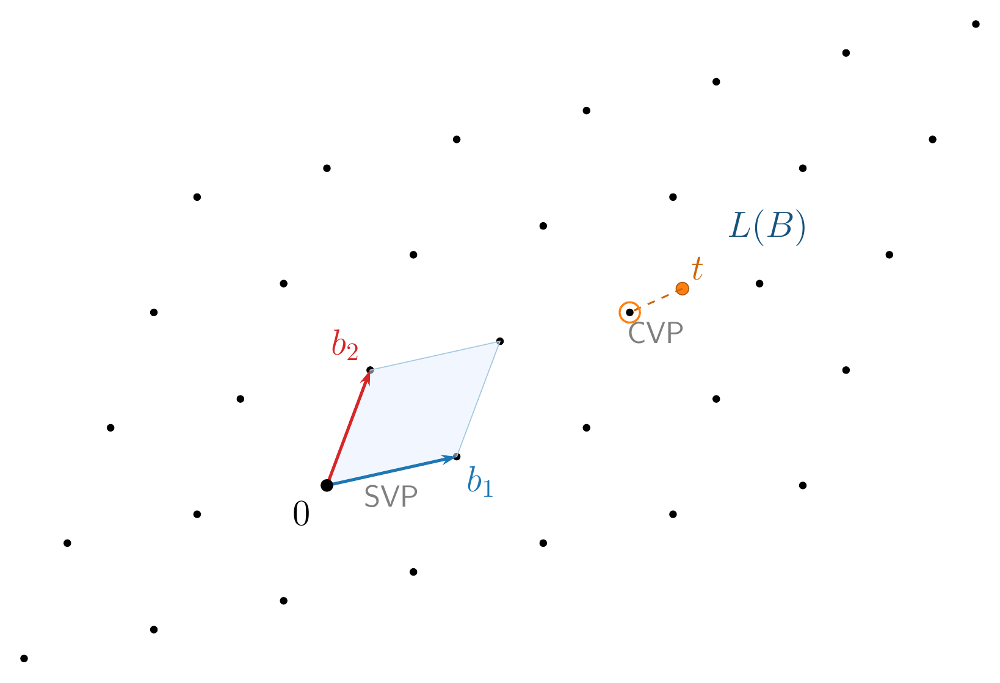
La criptografía moderna se apoya en dos problemas fundamentales sobre estas estructuras:
- SVP (Shortest Vector Problem): hallar el vector no nulo más corto del retículo.
- CVP (Closest Vector Problem): dado un punto cualquiera del espacio, hallar el punto del retículo más cercano. Si se exige el punto exacto más cercano, el problema es NP-hard. En su versión aproximada ya no es NP-hard, pero los mejores algoritmos conocidos siguen teniendo un coste exponencial en la dimensión \(n\) del retículo.
CVP es al menos tan difícil como SVP, y ambos son la base de la criptografía de retículos. En criptografía se usan precisamente las versiones aproximadas, lo bastante relajadas para no ser NP-hard, pero lo bastante estrictas para que ningún algoritmo conocido, clásico o cuántico, las resuelva en tiempo razonable. En las dimensiones típicas de FHE (\(n \geq 1024\)), eso es intratable. Esa dificultad es la que protege los datos. Pero un retículo por sí solo no cifra nada — necesitamos traducir esta dificultad geométrica en un mecanismo que permita cifrar y operar.
5.2 De los retículos a los anillos: LWE y RLWE
Una vez comprendido que la seguridad reside en la dificultad de encontrar puntos en un retículo, necesitamos una forma de implementarlo eficientemente. El esquema Learning With Errors (LWE), que veremos en más detalle en el capítulo sobre criptografía de retículos, traslada la geometría de retículos al álgebra lineal. La clave secreta \(s\) es un vector de \(n\) enteros, la parte pública incluye una matriz aleatoria \(A\) de \(n \times n\) enteros, y cifrar consiste en calcular:
\[b = A \cdot s + e \pmod{q}\]
donde \(e\) es un vector de errores pequeños — ruido inyectado deliberadamente. Sin ese ruido, recuperar \(s\) a partir de \(A\) y \(b\) sería álgebra lineal de primer curso (eliminación gaussiana). Pero con el error, \(b\) es un punto cercano al retículo generado por las columnas de \(A\), pero no exactamente en el retículo — y encontrar el punto más cercano es CVP. Esa es la trampa: el ruido convierte un problema trivial en uno intratable.
LWE funciona, pero tiene un problema de rendimiento: cada operación sobre un cifrotexto implica un producto matriz-vector — \(O(n^2)\) multiplicaciones de enteros. Con las dimensiones necesarias para FHE (\(n \geq 1024\)), eso son millones de operaciones por cada suma o multiplicación homomórfica. Además, la matriz \(A\) tiene \(n^2\) enteros: con \(n = 8192\), almacenarla requiere más de 67 millones de enteros. Demasiado lento y pesado para ser práctico.
La solución consiste en reemplazar vectores y matrices por polinomios. Un polinomio de grado menor que \(n\) — por ejemplo, \(3x^2 + 5x + 1\) — no es más que un vector de \(n\) coeficientes (\(1, 5, 3, 0, \ldots, 0\)) escrito con otra notación. Hasta aquí no hemos ganado nada. Pero si restringimos los polinomios a un anillo concreto ocurre algo notable.
¿Pero qué es ese anillo? En notación algebraica se escribe \(R_q = \mathbb{Z}_q[x]/(x^n + 1)\), polinomios con coeficientes enteros módulo \(q\) (i.e., \(\mathbb{Z}_q[x]\), la misma aritmética modular de LWE), con la restricción adicional de que \(x^n + 1 = 0\), es decir, \(x^n = -1\). Esta restricción sirve para que el grado nunca crezca: cuando al multiplicar dos polinomios algún término supera el grado \(n-1\), la regla lo «pliega» de vuelta al rango \([0, n-1]\). Veamos un ejemplo con \(n = 4\) y \(q = 7\). Partimos de dos polinomios en \(R_7\):
\[a(x) = 2x^3 + x + 3, \qquad b(x) = x^3 + 4x^2 + 1\]
Al multiplicarlos aparecen términos de grado superior a 3. El truco del anillo es aplicar \(x^4 = -1\): por ejemplo, \(2x^3 \cdot x^3 = 2x^6 = 2 \cdot x^2 \cdot x^4 = -2x^2 = 5x^2 \pmod{7}\). Tras plegar todos los términos, el resultado es \(2x^3 + 3x^2 + 2\) — siempre un polinomio de 4 coeficientes, igual que los vectores de LWE. Lo crucial es que esta restricción tiene exactamente el mismo efecto que restringir el conjunto de posibles matrices \(A\) al de matrices anticirculantes (cuyas filas son rotaciones de un único vector con signos alternados). Es decir, toda la información de la matriz \(A\) queda codificada en los coeficientes de un solo polinomio \(a(x)\).
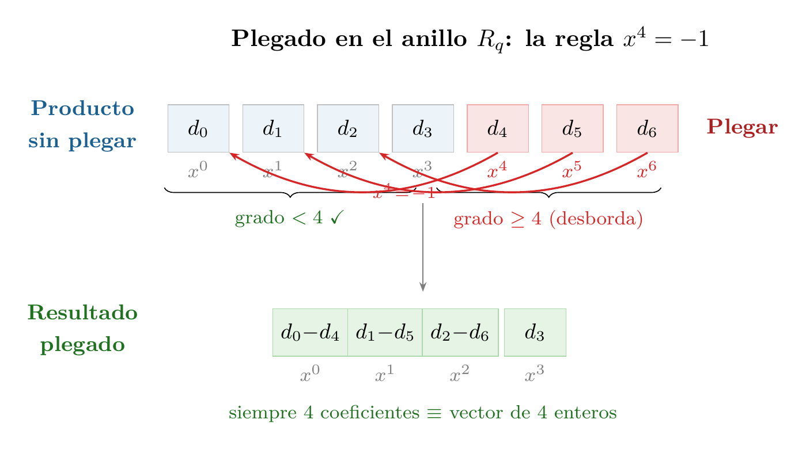
El resultado es Ring Learning With Errors (RLWE): la versión de LWE donde vectores y matrices se reemplazan por polinomios en \(R_q\). Una sola ecuación polinómica:
\[b(x) = a(x) \cdot s(x) + e(x) \pmod{q,\; x^n + 1}\]
codifica la misma información que el sistema matricial de LWE. La ganancia es doble. Primero, en almacenamiento: la matriz \(A\) de LWE tiene \(n^2\) enteros; el polinomio \(a(x)\) de RLWE tiene solo \(n\). Con \(n = 8192\), pasamos de 67 millones de enteros a 8192 — una reducción de \(8\,000\times\) en el tamaño de las claves. Segundo, en velocidad: multiplicar una matriz por un vector cuesta \(O(n^2)\); multiplicar dos polinomios en \(R_q\) cuesta solo \(O(n \log n)\) gracias a la Number Theoretic Transform (NTT), la versión modular de la FFT (Fast Fourier Transform). Con \(n = 8192\), eso es ~100,000 operaciones frente a ~67 millones — tres órdenes de magnitud más rápido. Esta eficiencia es lo que hace el FHE viable.
El nombre RLWE resume el mecanismo. Ring se refiere al anillo de polinomios — la fuente de la eficiencia. Learning With Errors describe el problema subyacente: dado \(b = a \cdot s + e\), ¿se puede «aprender» el secreto \(s\)? Sin el error, bastaría con álgebra lineal. Con él, recuperar \(s\) equivale a resolver CVP en un retículo formado por polinomios — justo la dificultad de la subsección anterior.
CKKS se construye directamente sobre RLWE, y la conexión es profunda. A diferencia de otros esquemas que tratan el error \(e\) como algo que debe eliminarse por completo, CKKS lo interpreta como un error de precisión — similar a lo que ocurre en la aritmética de punto flotante. Como RLWE ya incluye un error inherente, el esquema lo reutiliza para representar números reales como valores aproximados: el ruido criptográfico y el error de aproximación se gestionan juntos mediante las técnicas de re-escalado que veremos en Sección 5.4.
El parámetro poly_modulus_degree del código fija exactamente esa \(n\). Debe ser potencia de 2 (4096, 8192, 16384…) porque la NTT — como la FFT — requiere tamaños potencia de 2. La elección de \(n\) implica un compromiso: un \(n\) mayor da más seguridad y más slots de paralelismo (\(N_{\text{slot}} = n/2\) valores por cifrotexto, como veremos en Sección 5.6), pero cada operación sobre polinomios más largos es proporcionalmente más cara. Duplicar \(n\) de 8192 a 16384 duplica \(N_{\text{slot}}\), pero también duplica (aproximadamente) el tiempo de cada suma, multiplicación o rotación.
Esta representación polinómica tiene un coste directo en memoria. Cada cifrotexto es un par de polinomios \((a, b)\), cada uno con \(n\) coeficientes enteros módulo \(q\). El tamaño total es \(2 \times n \times \lceil\log_2 q\rceil\) bits. Con los parámetros de nuestro ejemplo (\(n = 8192\) y un módulo total \(q \approx 2^{200}\), suma de los 60+40+40+60 bits de coeff_mod_bit_sizes), un solo cifrotexto ocupa aproximadamente \(2 \times 8192 \times 200 / 8 \approx 400\) KB. Un double en claro ocupa 8 bytes; su versión cifrada, 400,000 bytes — una expansión de \(50\,000\times\). El packing (Sección 5.6) amortiza este coste al empaquetar hasta \(N_{\text{slot}} = n/2 = 4096\) valores en un solo cifrotexto, reduciendo el coste a unos 100 bytes por valor. Pero las claves criptográficas adicionales — especialmente las de Galois y las de bootstrapping — pueden alcanzar cientos de megabytes o incluso gigabytes, como veremos más adelante. Con la estructura matemática lista — anillo eficiente, ruido que garantiza la seguridad, NTT que acelera las operaciones —, falta la pieza central: ¿cómo se cifra un mensaje concreto, y por qué sumar o multiplicar cifrotextos produce el resultado correcto?
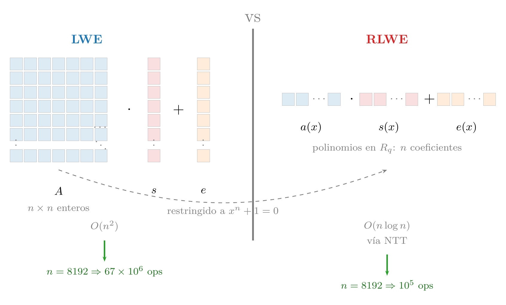
5.3 Cifrado y operaciones homomórficas
Ya tenemos la estructura algebraica — el anillo \(R_q\) con sus operaciones eficientes vía NTT — y sabemos que la seguridad reside en la dificultad de resolver problemas de retículos. Ahora veamos cómo se usa esta maquinaria para cifrar mensajes y, sobre todo, por qué las operaciones aritméticas sobre cifrotextos producen resultados correctos sin necesidad de descifrar.
La mecánica del cifrado es elegante. La clave secreta \(s\) es un polinomio con coeficientes pequeños. Para cifrar un mensaje \(m\), se genera un polinomio aleatorio \(a\) y un error pequeño \(e\) — ruido deliberadamente inyectado para hacer el problema de descifrado más difícil — y se produce un par:
\[\text{Enc}(m) = (a,\; b = a \cdot s + e + m)\]
¿Por qué hace falta \(a\)? ¿No bastaría con cifrar como \(c = s + e + m\) y descifrar como \(c - s\)? El problema es que sin \(a\), si alguien intercepta dos cifrotextos \(c_1 = s + e_1 + m_1\) y \(c_2 = s + e_2 + m_2\), puede restarlos: \(c_1 - c_2 \approx m_1 - m_2\). La clave \(s\) se cancela y el atacante aprende la diferencia entre los mensajes. El polinomio aleatorio \(a\), distinto en cada cifrado, actúa como una máscara que hace cada cifrotexto indistinguible de ruido aleatorio. Quien conoce \(s\) descifra — \(\text{Dec}(c) = b - a \cdot s = e + m\) — y recupera \(m\) (el error \(e\) es pequeño y se puede eliminar). Sin conocer \(s\), la presencia de \(a\) y \(e\) hace que recuperar \(m\) sea equivalente a resolver un problema de retículos.
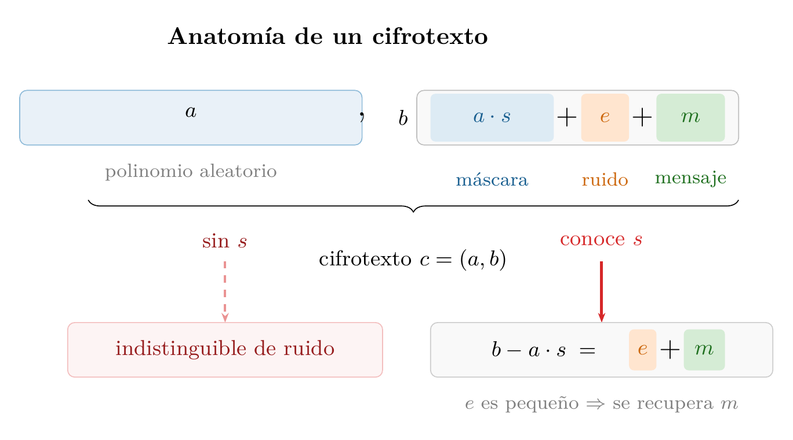
La propiedad homomórfica surge de forma natural. Veamos por qué. Sean dos cifrotextos \(c_1 = (a_1, b_1)\) y \(c_2 = (a_2, b_2)\) que cifran \(m_1\) y \(m_2\) respectivamente, donde \(b_i = a_i \cdot s + e_i + m_i\).
Suma. Basta sumar componente a componente:
\[\text{Enc}(m_1 + m_2) = c_1 + c_2 = (a_1 + a_2,\; b_1 + b_2)\]
Si descifras este resultado con la clave \(s\), obtienes:
\[\begin{aligned} \text{Dec}(c_1 + c_2) &= (b_1 + b_2) - (a_1 + a_2) \cdot s \\ &= (e_1 + e_2) + (m_1 + m_2) \end{aligned}\]
Es decir, el mensaje descifrado es \(m_1 + m_2\) con un error de \((e_1 + e_2)\). El error crece, pero solo como una suma — si cada \(e_i\) es pequeño, la suma sigue siendo pequeña.
Suma con constante en claro. ¿Qué ocurre si uno de los operandos no está cifrado? Sea \(c = (a, b)\) un cifrotexto que cifra \(m\), y \(k\) una constante en claro. La suma es aún más sencilla:
\[\text{Enc}(m + k) = c + k = (a,\; b + k)\]
Solo se modifica la segunda componente. Al descifrar:
\[\text{Dec}(c + k) = (b + k) - a \cdot s = e + m + k\]
El error \(e\) no cambia en absoluto — la constante se suma directamente al mensaje sin afectar al ruido. Esta es la operación más barata del repertorio: ni siquiera hay crecimiento de error.
Multiplicación por constante. Ahora multipliquemos el cifrotexto \(c = (a, b)\) por una constante en claro \(k\):
\[\text{Enc}(k \cdot m) = k \cdot c = (k \cdot a,\; k \cdot b)\]
Al descifrar:
\[\begin{aligned} \text{Dec}(k \cdot c) &= k \cdot b - k \cdot a \cdot s = k \cdot (e + m) \\ &= k \cdot m + k \cdot e \end{aligned}\]
El mensaje es \(k \cdot m\) — correcto — y el error pasa de \(e\) a \(k \cdot e\), proporcional a la constante. El ruido crece, pero de forma controlada. Además, multiplicar por una constante simplemente escala ambas componentes del par: la estructura \((a, b)\) se preserva intacta, sin complicaciones adicionales. Veremos enseguida que la multiplicación entre dos cifrotextos es mucho más costosa — requiere maquinaria extra y consume parte del presupuesto del esquema.
Esto explica por qué en las recetas anteriores se insistía en que operaciones como features_cifrados * pesos (Receta 3) o consulta_cifrada * scores (Receta 6) eran «baratas»: al multiplicar un cifrotexto por valores en claro, el coste es mínimo. Solo la multiplicación entre dos cifrotextos — que veremos a continuación — tiene un coste significativo.
Multiplicación entre cifrotextos. Las operaciones con constantes en claro eran directas — sumas y multiplicaciones componente a componente, sin coste adicional. Para la multiplicación entre dos cifrotextos no es tan sencillo.
Queremos definir \(\text{Enc}(m_1 \cdot m_2) = c_1 \otimes c_2 = (a, b)\) — usamos \(\otimes\) en lugar de \(\cdot\) porque, como veremos, esta operación sobre cifrotextos es estructuralmente distinta de la multiplicación por constantes — tal que \(\text{Dec}(c_1 \otimes c_2) = b - a \cdot s \approx m_1 \cdot m_2\). La pregunta es: ¿qué deben ser \(a\) y \(b\)?
Para descubrirlo, trabajamos hacia atrás. Sabemos que descifrar cada cifrotexto da \(b_i - a_i \cdot s = m_i + e_i\), así que el producto de ambos descifrados es \((m_1 + e_1)(m_2 + e_2) \approx m_1 \cdot m_2\) — justo lo que queremos. Expandimos \((b_1 - a_1 s)(b_2 - a_2 s)\) para ver qué forma tiene:
\[(b_1 - a_1 s)(b_2 - a_2 s) = \underbrace{b_1 b_2}_{d_0}\; - \;\underbrace{(a_1 b_2 + a_2 b_1)}_{d_1} \cdot s\; + \;\underbrace{a_1 a_2}_{d_2} \cdot s^2\]
Los tres coeficientes — \(d_0 = b_1 b_2\), \(d_1 = a_1 b_2 + a_2 b_1\) y \(d_2 = a_1 a_2\) — se calculan exclusivamente con las componentes públicas, sin necesidad de \(s\). Hasta aquí todo bien.
Pero hay un problema: la expresión no tiene la forma \(b - a \cdot s\) que necesitamos para descifrar con un par. Tiene tres términos y depende de \(s^2\). No podemos encontrar un par \((a, b)\) que encaje directamente — necesitamos eliminar ese \(s^2\).
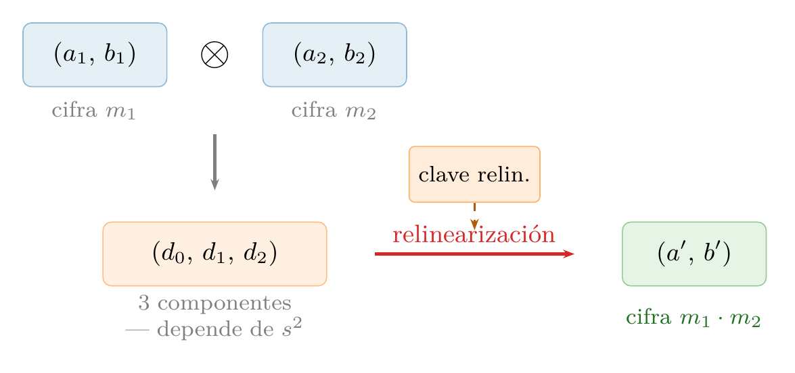
Aquí entra la relinearización. Se publica de antemano una clave de relinearización: un cifrado de \(s^2\) bajo la propia clave \(s\), es decir, un par \((a_r, b_r)\) donde \(b_r \approx a_r \cdot s + s^2\). Con ella, absorbemos el término \(d_2 \cdot s^2\) y construimos el par que buscábamos:
\[a = d_1 + d_2 \cdot a_r, \qquad b = d_0 + d_2 \cdot b_r\]
¿Funciona? Comprobemos: \(b - a \cdot s = d_0 + d_2 b_r - (d_1 + d_2 a_r) s = d_0 - d_1 s + d_2(b_r - a_r s) \approx d_0 - d_1 s + d_2 s^2\), que es exactamente el producto original. Ahora sí tenemos un par con la forma estándar que se descifra solo con \(s\) y produce \(m_1 \cdot m_2\).
Esto resuelve la pregunta que nos planteábamos: la multiplicación homomórfica es \(\text{Enc}(m_1 \cdot m_2) = c_1 \otimes c_2 = (a, b)\) con \(a\) y \(b\) definidos arriba. En librerías como TenSEAL la relinearización se aplica internamente cada vez que multiplicas dos cifrotextos, así que el usuario solo escribe c1 * c2.
Pero una vez que somos capaces de multiplicar, aparece un segundo problema: el error crece mucho más rápidamente. Fijémonos que si sustituimos \(b_i = a_i s + e_i + m_i\), el producto descifrado es:
\[(e_1 + m_1)(e_2 + m_2) = m_1 \cdot m_2 + e_1 \cdot m_2 + e_2 \cdot m_1 + e_1 \cdot e_2\]
El resultado contiene \(m_1 \cdot m_2\) — lo que buscábamos — pero el error resultante \(e_{\text{mult}} = e_1 \cdot m_2 + e_2 \cdot m_1 + e_1 \cdot e_2\) es mucho mayor que en la suma. Los errores ya no se suman sino que se multiplican con los mensajes, creciendo mucho más rápido. Tras pocas multiplicaciones encadenadas, el error acumulado puede superar al mensaje y el descifrado produce basura. Esta es la razón fundamental por la que el FHE tiene un presupuesto limitado de operaciones.
Hay un punto sutil que conviene hacer explícito: las dos únicas operaciones que el esquema proporciona de forma nativa son la suma y la multiplicación de polinomios. La estructura algebraica de RLWE — un anillo de polinomios — solo define estas dos operaciones. Cualquier otro cálculo — comparaciones (\(x > y\)), máximos, mínimos, funciones no lineales como sigmoide o ReLU — debe aproximarse mediante un polinomio de grado suficientemente alto, y cada multiplicación de ese polinomio consume un nivel del presupuesto. Un simple if (x > 0) que en código normal es una instrucción, en FHE requiere evaluar un polinomio de grado 10 a 30 que aproxime la función signo, consumiendo entre 4 y 10 niveles multiplicativos. Esta restricción — a veces llamada modelo de circuito aritmético — es la que convierte la programación sobre datos cifrados en un ejercicio de diseño cuidadoso, como vimos en Capítulo 4. Y cada una de esas multiplicaciones tiene un coste que no hemos cuantificado aún: el ruido acumulado.
5.5. En el cifrado RLWE, ¿por qué es necesario el polinomio aleatorio \(a\) en cada cifrado? ¿Qué ataque permite su ausencia?
5.6. Explica con tus palabras por qué la suma homomórfica es «barata» (el error crece linealmente) mientras que la multiplicación es «cara» (el error crece mucho más rápido).
5.7. ¿Qué papel juega la relinearización después de una multiplicación homomórfica? ¿Qué pasaría si no se aplicara?
5.8. CKKS no soporta ramas condicionales. ¿Cómo implementarías la siguiente lógica utilizando CKKS? ¿Cuántos niveles multiplicativos consume aproximadamente?
if (m < 0) then m = -m5.4 Ruido y niveles
Acabamos de ver que cada multiplicación entre cifrotextos hace crecer el error de forma dramática — los errores se multiplican con los mensajes en lugar de simplemente sumarse. Y adelantamos que, tras pocas multiplicaciones encadenadas, el error puede superar al mensaje y el descifrado produce basura. Pero ¿cuántas operaciones podemos encadenar exactamente, y cómo controla el esquema ese deterioro?
La clave está en el módulo \(q\). Todas las operaciones aritméticas del esquema se realizan módulo un número grande \(q\), llamado módulo del cifrotexto. Tras cifrar un mensaje fresco, el error \(e\) es pequeño — del orden de unos pocos bits. El descifrado funciona correctamente siempre que el error acumulado sea menor que \(q/2\). Podemos pensar en \(\log_2(q)\) — el número de bits de \(q\) — como el tamaño del «depósito de combustible», y en \(\log_2(e)\) como el combustible ya consumido.
¿Cuánto crece el error en cada multiplicación? En CKKS, los mensajes no se almacenan directamente sino escalados por un factor \(\Delta\) (en nuestro código, \(\Delta = 2^{40}\)). Un cifrotexto que almacena el mensaje \(m\) contiene internamente \(\Delta \cdot m + e\), donde \(e\) es el error. Al multiplicar dos cifrotextos:
\[(\Delta \, m_1 + e_1)(\Delta \, m_2 + e_2) = \Delta^2 \, m_1 m_2 + \Delta(m_1 e_2 + m_2 e_1) + e_1 e_2\]
El término deseado es \(\Delta^2 m_1 m_2\) y el error es \(\Delta(m_1 e_2 + m_2 e_1) + e_1 e_2\). Dado que \(e_1, e_2\) son pequeños, el término \(e_1 e_2\) es despreciable y el error dominante es \(\Delta(m_1 e_2 + m_2 e_1)\). Hay dos problemas: la escala del mensaje ha pasado de \(\Delta\) a \(\Delta^2\), y el error se ha multiplicado por \(\Delta\).
El rescaling resuelve ambos de un golpe: dividimos todo el cifrotexto por \(\Delta\):
\[\frac{\Delta^2 m_1 m_2 + \Delta(m_1 e_2 + m_2 e_1)}{\Delta} = \Delta \, m_1 m_2 + (m_1 e_2 + m_2 e_1)\]
Tras el rescaling, el mensaje vuelve a estar escalado por \(\Delta\) — la forma estándar — y el error es ahora \(e_{\text{resc}} = m_1 e_2 + m_2 e_1\). Los 40 bits extra de error que había introducido la multiplicación se han eliminado al dividir por \(\Delta = 2^{40}\). El error resultante es mayor que los originales \(e_1, e_2\) (por el factor \(m_i\)), pero ya no crece de forma catastrófica. Sin rescaling, cada multiplicación añadiría 40 bits de error y en dos o tres operaciones se desbordaría \(q\); con rescaling, el error crece moderadamente y lo que se consume es un eslabón del módulo.
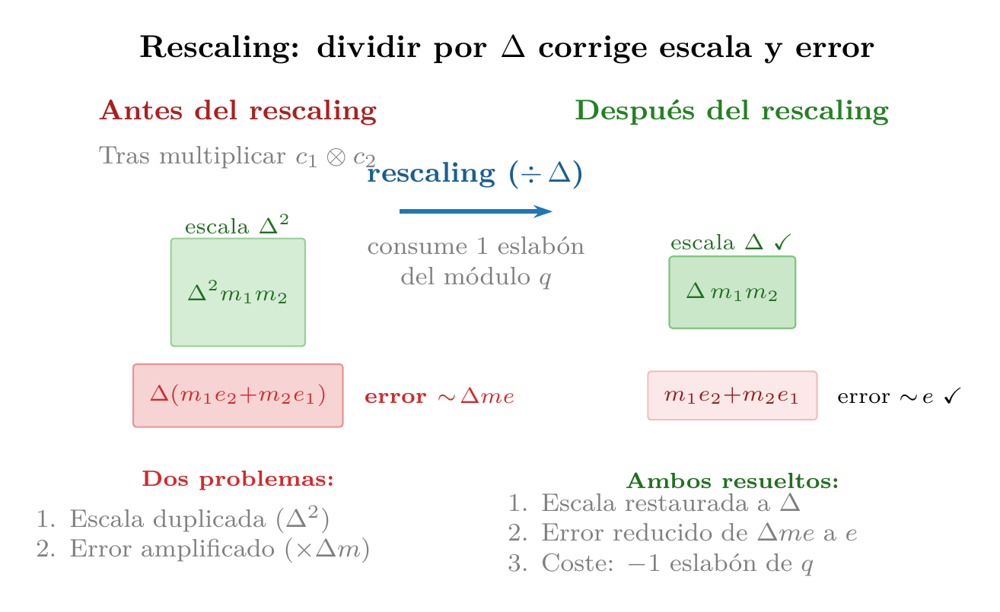
En concreto, un esquema leveled (por niveles) gestiona este presupuesto con una cadena de módulos decrecientes \(q_0 > q_1 > \cdots > q_L\). Cada rescaling divide el cifrotexto por \(\Delta\) y reduce el módulo al siguiente de la cadena: \(q_i \to q_{i+1} = q_i / \Delta\). Cuando se agotan los eslabones, no quedan más niveles para multiplicar.
Esto es exactamente lo que configura coeff_mod_bit_sizes en el código. Veámoslo con nuestro ejemplo:
coeff_mod_bit_sizes = [60, 40, 40, 60]- El último valor (60 bits) es un módulo auxiliar reservado para la relinearización que vimos antes — el paso que convierte el triplete \((d_0, d_1, d_2)\) en un par. La librería necesita un módulo extra de gran tamaño para ejecutar esa operación con precisión, pero no cuenta como nivel de multiplicación.
- El primer valor (60 bits) fija la escala inicial \(\Delta\) del cifrado. Recordemos que CKKS almacena \(\Delta \cdot m + e\); un \(\Delta\) más grande (más bits) da más decimales de precisión en los números reales, pero ocupa más espacio en el módulo total. Un valor de 60 bits proporciona aproximadamente 18 dígitos decimales de precisión.
- Los valores intermedios (40, 40) son los eslabones de la cadena de rescaling: cada uno representa un nivel de multiplicación disponible. Con dos valores de 40 bits, el esquema soporta hasta dos multiplicaciones encadenadas.
El número 40 no es arbitrario: coincide con global_scale = 2**40 que fijamos al crear el contexto. Cada rescaling divide por la escala (\(2^{40}\)), lo que requiere consumir exactamente un módulo de 40 bits de la cadena.
¿Cómo decide un ingeniero estos valores? La regla práctica es: cuenta cuántas multiplicaciones encadenadas necesita tu circuito (llamémoslo \(L\)) y configura \(L\) valores intermedios de 40 bits, más un 60 al principio y otro al final. Para calcular una media (suma + división por constante) basta con una multiplicación, así que \(L = 1\) sería suficiente. Nuestro ejemplo usa \(L = 2\) para tener margen. Si necesitaras, por ejemplo, calcular un polinomio de grado 4, usarías [60, 40, 40, 40, 40, 60] — cuatro niveles intermedios. Más niveles implican un módulo \(q\) total más grande, lo que a su vez requiere un poly_modulus_degree mayor para mantener la seguridad.
¿Por qué? Recordemos que la seguridad de RLWE descansa en que el error \(e\) inyectado al cifrar es lo bastante pequeño para ser eliminado al descifrar, pero lo bastante grande para «ocultar» el mensaje a un atacante. Un atacante que intenta romper el esquema debe distinguir un cifrotexto RLWE — \(b = a \cdot s + e + m\) — de un par de polinomios puramente aleatorios. Cuanto mayor sea \(q\) relativo al error \(e\), más fácil le resulta: el error ocupa una fracción menor del espacio de posibles valores módulo \(q\), y el cifrotexto se parece cada vez más a un producto exacto \(a \cdot s\) sin ruido, que sería trivial de invertir. Aumentar \(N\) — la dimensión del retículo subyacente — compensa ese debilitamiento al hacer el problema exponencialmente más difícil por la misma razón que vimos al introducir RLWE: los mejores algoritmos de reducción de retículos tienen coste exponencial en la dimensión. Como regla práctica, los bits de seguridad — el logaritmo en base 2 del coste mínimo para romper el esquema por fuerza bruta, es decir, el exponente \(\lambda\) tal que el atacante necesita \(\approx 2^\lambda\) operaciones — son aproximadamente proporcionales a \(N / \log_2 q\): si duplicas el tamaño de \(q\) añadiendo niveles a la cadena, necesitas aumentar \(N\) proporcionalmente para que el coste de ataque siga siendo exponencial. Con 4 niveles, la cadena [60, 40, 40, 40, 40, 60] suma 280 bits de módulo total frente a los 200 de nuestro ejemplo, y para mantener 128 bits de seguridad típicamente necesitarás \(N = 16384\) en vez de 8192.
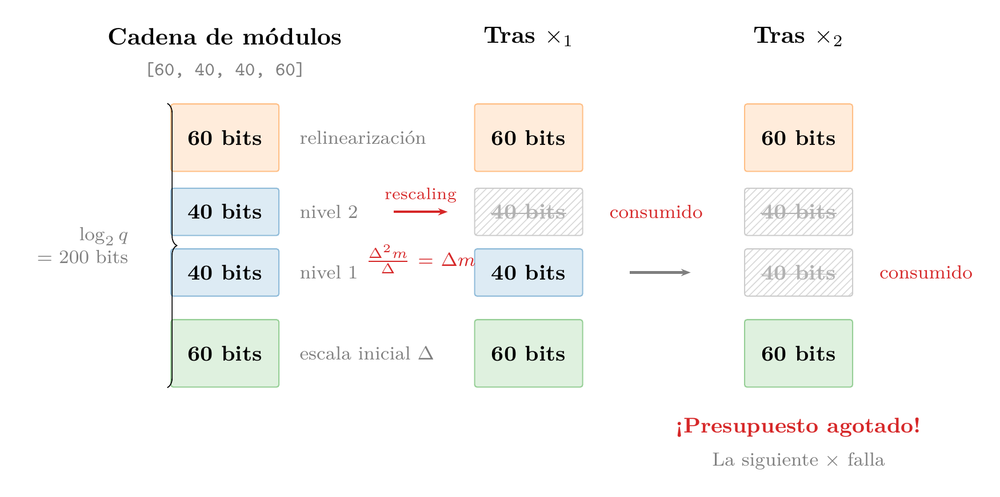
Pero si el presupuesto es finito, algo no cuadra: llamamos al esquema completamente homomórfico, y sin embargo solo permite un número fijo de multiplicaciones — no muy diferente, en principio, de los esquemas parciales que mencionamos al inicio del capítulo.
5.5 Bootstrapping
Hemos recorrido un camino que va de los retículos a RLWE, del cifrado a las operaciones homomórficas, y del crecimiento del ruido a la cadena de módulos que lo gestiona. Pero todo lo descrito hasta aquí define un esquema leveled — capaz de un número prefijado de multiplicaciones. Para merecer el nombre de fully homomorphic, necesitamos una forma de restaurar el presupuesto agotado. Esa es la contribución clave de Craig Gentry, que ya mencionamos en la historia del FHE: el bootstrapping.
Supongamos que tras \(L\) multiplicaciones hemos agotado la cadena de módulos: cada rescaling ha dividido el módulo por \(\Delta\), dejando el cifrotexto en el último eslabón \(q_L = q_0 / \Delta^L\), sin niveles para seguir operando. El error es pequeño gracias al rescaling, pero no hay más eslabones que consumir.
La idea del bootstrapping es contraintuitiva: tomamos ese cifrotexto «agotado» y lo desciframos homomórficamente. Es decir, el propio circuito de descifrado (\(b - a \cdot s\)) se evalúa como una operación sobre cifrotextos. Para ello, la clave secreta \(s\) se cifra de antemano bajo la propia clave \(s\) y se publica como clave de bootstrapping (CB). El sistema ejecuta el descifrado «dentro de la caja de guantes» — retomando la analogía de Gentry que vimos al inicio del capítulo: el cifrotexto agotado entra, se descifra internamente y se vuelve a cifrar, todo sin salir nunca del dominio cifrado. El resultado es un cifrotexto fresco — con el módulo restaurado a \(q_0\) y el presupuesto de niveles completo — que contiene el mismo mensaje.
Veamos paso a paso cómo funciona. Partimos del cifrotexto agotado \(c = (a, b)\) en el último nivel \(L\), con módulo \(q_L\). Sabemos que:
\[b - a \cdot s \equiv \Delta \, m + e \pmod{q_L}\]
donde \(e\) es pequeño gracias al rescaling acumulado. Los valores \(a\) y \(b\) son conocidos — son el propio cifrotexto, que el servidor tiene en sus manos. Lo que no conoce es \(s\).
Antes de empezar cualquier cómputo, el propietario de la clave ha publicado una clave de bootstrapping (CB): un cifrado fresco de la clave secreta \(s\) bajo la propia clave \(s\), pero con el módulo completo \(q_0\). Siguiendo la misma notación de cifrado que definimos antes — \(\text{Enc}(m) = (a,\; b = a \cdot s + e + m)\) — la clave de bootstrapping es:
\[\text{CB} = \text{Enc}(s) = (a_{\text{cb}},\; b_{\text{cb}} = a_{\text{cb}} \cdot s + e_{\text{cb}} + s)\]
Es exactamente un cifrado normal, solo que el «mensaje» cifrado es la propia clave \(s\). (Cifrar la clave bajo sí misma requiere una hipótesis llamada seguridad circular; todos los esquemas FHE actuales la asumen.) La diferencia crucial es que este cifrado se generó con el módulo completo \(q_0\), así que tiene todo el presupuesto de niveles intacto.
Ahora el servidor puede evaluar el circuito de descifrado homomórficamente. Veamos cómo, paso a paso. Recordemos que \(a\) y \(b\) — las componentes del cifrotexto agotado — son valores concretos, polinomios que el servidor tiene en sus manos. Toda la información del mensaje \(m\) y del error acumulado \(e\) está codificada dentro de esos valores, en la relación \(b - a \cdot s \equiv \Delta m + e \pmod{q_L}\). Los polinomios \(a\) y \(b\) en sí mismos son solo números grandes; el error no «vive» en \(a\) o en \(b\) por separado, sino en cómo se combinan con la clave \(s\).
Pero hay un detalle crucial en ese «\(\pmod{q_L}\)». Lo que significa es que el valor entero de \(b - a \cdot s\) — sin reducir módulo nada — no es \(\Delta m + e\), sino:
\[b - a \cdot s = \Delta \, m + e + k \cdot q_L\]
para algún entero \(k\). Al reducir módulo \(q_L\), el término \(k \cdot q_L\) desaparece y solo queda el residuo \(\Delta m + e\). Cuando el cifrotexto operaba bajo el módulo \(q_L\), eso no importaba — la reducción se aplicaba implícitamente. Pero ahora que vamos a pasar a un módulo mayor, ese \(k \cdot q_L\) se convierte en un problema.
Paso 1: descifrado homomórfico. El servidor usa \(a\) y \(b\) como constantes conocidas para operar sobre la CB. Primero, multiplica la CB (que es un cifrotexto que contiene \(s\)) por la constante \(a\). Ya vimos que multiplicar un cifrotexto por una constante preserva el mensaje: si CB cifra \(s\), entonces \(a \cdot \text{CB}\) cifra \(a \cdot s\). Esta operación es barata — no consume nivel porque no es una multiplicación entre dos cifrotextos. Después, resta de la constante \(b\). Sumar una constante a un cifrotexto simplemente suma esa constante al mensaje cifrado. El resultado es:
\[b - a \cdot \text{CB} = \text{Enc}(b - a \cdot s) = \text{Enc}(\Delta \, m + e + k \cdot q_L)\]
Este nuevo cifrotexto fue generado a partir de la CB, que tiene el módulo completo \(q_0\). Por tanto tiene niveles de sobra para seguir operando. Pero contiene \(\Delta m + e + k \cdot q_L\) — el mensaje que queremos más un término espurio \(k \cdot q_L\) que hay que eliminar.
Paso 2: eliminación del término \(k \cdot q_L\) (reducción modular homomórfica). Aquí reside el coste real del bootstrapping. Necesitamos calcular \((b - a \cdot s) \bmod q_L\) homomórficamente para quedarnos solo con \(\Delta m + e\). Pero la reducción modular no es una operación polinómica — no se puede expresar como una secuencia de sumas y multiplicaciones. Para evaluarla homomórficamente hay que aproximarla mediante un polinomio de grado alto, lo que consume múltiples niveles de multiplicación — típicamente entre 10 y 20, según la precisión deseada.
Solo después de este segundo paso obtenemos un cifrotexto fresco bajo \(q_0\) que contiene \(\Delta m + e\) — el mensaje limpio, sin el término \(k \cdot q_L\), y con el presupuesto de niveles parcialmente restaurado.
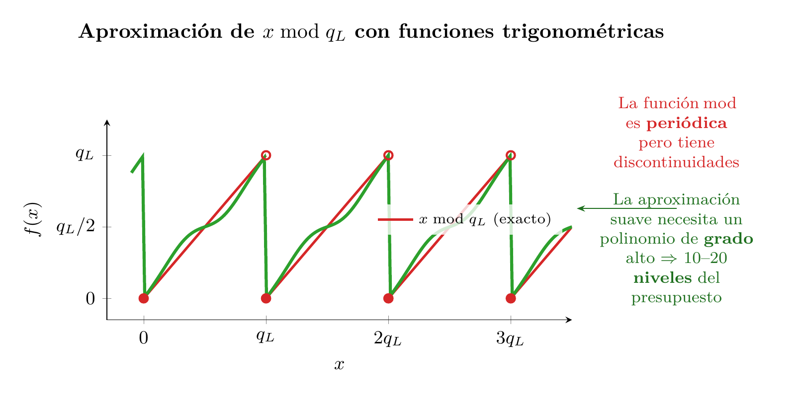
Por eso el bootstrapping es caro: el paso 1 (\(b - a \cdot \text{CB}\)) es trivial, pero el paso 2 (la reducción modular) es un cálculo pesado que consume buena parte de los niveles recién restaurados.
Es como vaciar el depósito de combustible de un avión hasta la reserva y, en vez de aterrizar, usar la propia reserva para accionar una bomba que rellena el tanque principal desde un depósito auxiliar que llevabas a bordo.
En la práctica, un bootstrap tarda del orden de un segundo — frente a los milisegundos de una operación normal — y el cifrotexto resultante no recupera todos los niveles, porque la propia evaluación del circuito de descifrado consume parte del presupuesto restaurado. Por esta razón, el enfoque preferido es diseñar el cálculo para que quepa dentro del presupuesto de niveles (leveled FHE) y recurrir al bootstrapping solo cuando el circuito es demasiado profundo para dimensionarlo de antemano.
En la práctica, la situación en CKKS es algo más compleja: los datos no se almacenan directamente como coeficientes del polinomio, sino codificados mediante una transformada — lo que añade pasos adicionales (CoeffsToSlots y SlotsToCoeffs) al circuito de bootstrapping. Veremos esa codificación en detalle en la siguiente sección.
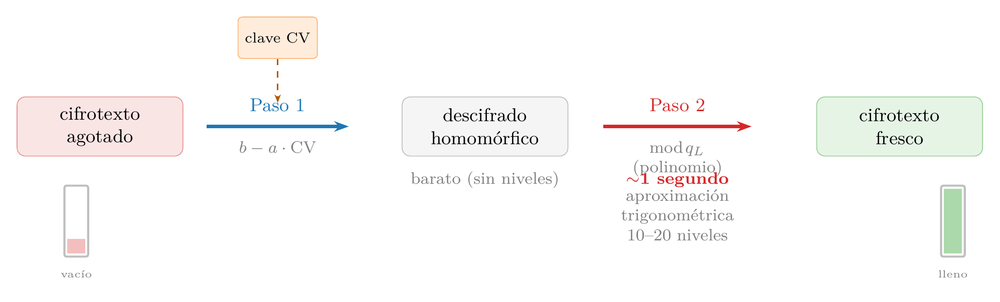
Con o sin bootstrapping, cada operación homomórfica tarda milisegundos — un coste que se paga por cifrotexto. Si cada cifrotexto contiene un solo dato, el rendimiento resulta prohibitivo para cualquier aplicación real.
5.6 Packing y SIMD
Si cada operación homomórfica cuesta milisegundos independientemente de cuántos datos contenga el cifrotexto, la clave para un rendimiento aceptable está en empaquetar el máximo número de datos en cada uno. Gracias a una técnica llamada batching o packing, un solo cifrotexto puede contener miles de valores independientes, y una sola operación sobre el cifrotexto los procesa todos en paralelo. El packing es lo que convierte al FHE de una curiosidad teórica en una herramienta con rendimiento aceptable. Pero ¿cómo caben miles de números dentro de un solo polinomio? La respuesta conecta la estructura algebraica del anillo \(R_q\) con una idea que ya conocemos: la transformada de Fourier.
Para entender por qué el packing es necesario, consideremos la alternativa ingenua. Queremos cifrar los cinco salarios \([3200, 4100, 2800, 5500, 3900]\). La forma más directa sería codificar cada valor como un polinomio constante — \(m(x) = 3200\), \(m(x) = 4100\), etc. — y cifrar cada uno por separado. El problema es que cada cifrotexto es un par de polinomios de grado \(N - 1 = 8191\), con sus 8192 coeficientes enteros módulo \(q\): unos 400 KB. De esos 8192 coeficientes, solo el término constante lleva información útil; los otros 8191 son ceros. Para cinco salarios necesitaríamos cinco cifrotextos independientes — 2 MB en total — y cinco operaciones separadas para cualquier cálculo. Un polinomio de 8192 coeficientes transportando un único número es un desperdicio absurdo, como fletar un camión de 18 ruedas para entregar una carta.
La estructura algebraica de \(R_q\) ofrece algo mucho mejor: empaquetar los cinco valores — o hasta \(N/2 = 4096\) — en un único polinomio, de modo que una sola operación los procese todos a la vez. Pero los datos no se colocan en los coeficientes del polinomio: se codifican en sus evaluaciones en puntos específicos del plano complejo.
De coeficientes a slots. Recordemos que un cifrotexto vive en el anillo \(R_q\) que definimos antes (\(x^N + 1 = 0\)): un polinomio \(m(x)\) de grado menor que \(N\) con coeficientes enteros módulo \(q\). A primera vista, este polinomio tiene \(N\) coeficientes y punto — no hay «posiciones» independientes donde colocar datos. Pero ocurre algo interesante cuando evaluamos ese polinomio en puntos concretos — una operación que en álgebra se llama canonical embedding (inmersión canónica).
El polinomio \(x^N + 1\) tiene \(N\) raíces complejas: \(\omega_k = e^{i\pi(2k+1)/N}\) para \(k = 0, 1, \ldots, N-1\). Son puntos equidistribuidos en el círculo unitario del plano complejo — exactamente los mismos tipos de raíces que aparecen en la FFT. Evaluar \(m(x)\) en esas \(N\) raíces produce \(N\) números complejos. Pero como los coeficientes de \(m(x)\) son reales (enteros), las evaluaciones en raíces conjugadas son también conjugadas: \(m(\bar{\omega}_k) = \overline{m(\omega_k)}\). Las raíces se agrupan en \(N/2\) pares conjugados, y cada par aporta un solo valor complejo independiente. Los \(N/2\) valores complejos resultantes son los slots.
Cada slot tiene una parte real y una parte imaginaria, así que en principio se podrían empaquetar hasta \(N\) números reales — \(N/2\) en las partes reales y \(N/2\) en las imaginarias. En la práctica, CKKS empaqueta \(N_{\text{slot}} = N/2\) valores reales (uno por slot, usando solo la parte real), porque mezclar partes reales e imaginarias complica la gestión de errores. Con poly_modulus_degree = 8192, tenemos \(N_{\text{slot}} = 4096\) slots disponibles.
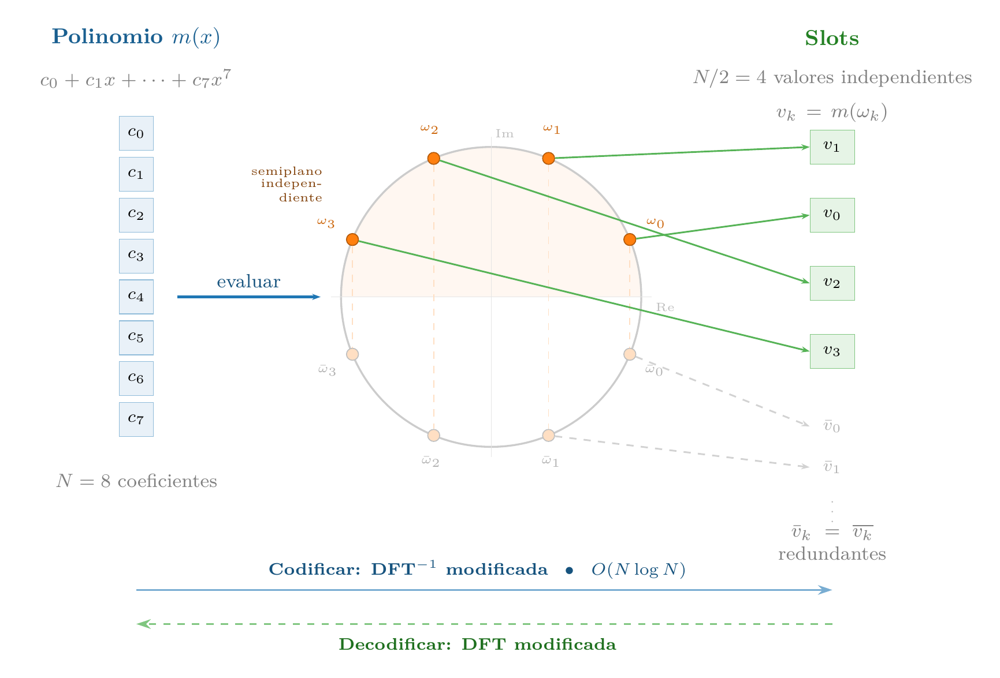
Codificar un vector de datos — por ejemplo, los cinco salarios \([3200, 4100, 2800, 5500, 3900]\) — consiste en encontrar el polinomio \(m(x)\) de grado \(N-1\) cuyas evaluaciones en las \(N/2\) raíces coincidan con esos valores. Es exactamente una transformada inversa: dados los valores en el «dominio de frecuencias» (los slots), se calcula la señal en el «dominio del tiempo» (los coeficientes del polinomio). La librería lo hace internamente con una variante de la inversa de la DFT, que cuesta \(O(N \log N)\) — la misma complejidad que la NTT que ya usamos para multiplicar polinomios. Los cinco salarios se colocan en los primeros 5 de los 4096 slots; los restantes 4091 quedan a cero.
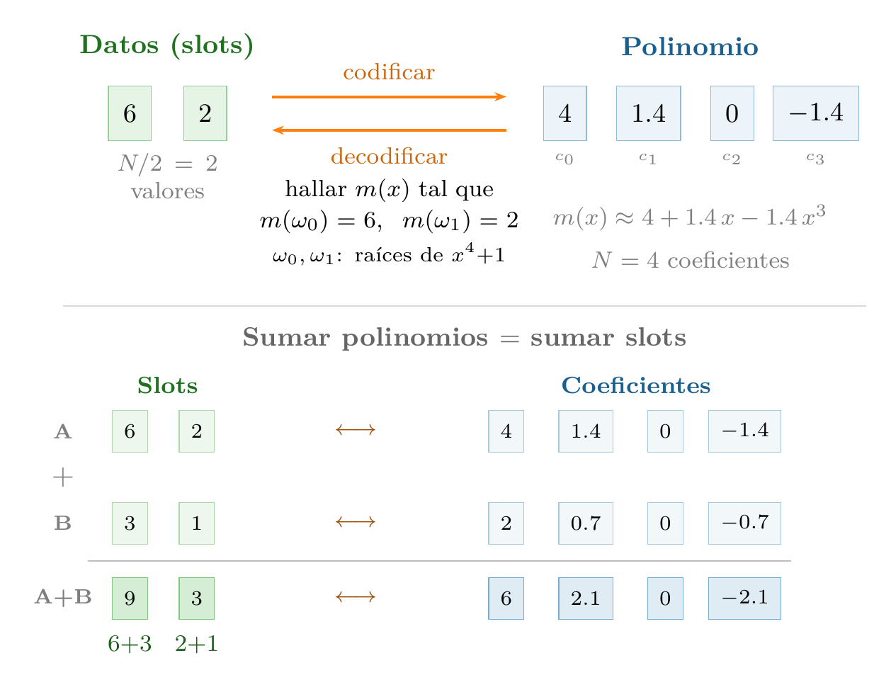
¿Por qué funciona el paralelismo? La clave es que las operaciones en el anillo \(R_q\) — suma y multiplicación de polinomios — se traducen automáticamente en operaciones elemento a elemento sobre los slots. Si \(m_1(x)\) codifica el vector \((v_1, v_2, \ldots, v_{N/2})\) y \(m_2(x)\) codifica \((w_1, w_2, \ldots, w_{N/2})\), entonces:
- \(m_1(x) + m_2(x)\) codifica \((v_1 + w_1,\; v_2 + w_2,\; \ldots,\; v_{N/2} + w_{N/2})\)
- \(m_1(x) \cdot m_2(x)\) codifica \((v_1 \cdot w_1,\; v_2 \cdot w_2,\; \ldots,\; v_{N/2} \cdot w_{N/2})\)
Esto es una consecuencia directa de la estructura algebraica: evaluar un polinomio en un punto es un homomorfismo de anillos — si \(f(\omega) = v\) y \(g(\omega) = w\), entonces \((f+g)(\omega) = v+w\) y \((f \cdot g)(\omega) = v \cdot w\). Una sola operación sobre el polinomio equivale a \(N/2\) operaciones independientes sobre los datos — la misma idea que las instrucciones SIMD (Single Instruction, Multiple Data) de un procesador moderno.
La analogía con SIMD es precisa. En una CPU con instrucciones AVX-512, un registro de 512 bits almacena 8 doubles de 64 bits, y una instrucción VADDPD (Vector Add Packed Double-Precision Floating-Point) suma los 8 pares en un solo ciclo. En FHE, el cifrotexto es el «registro» y almacena hasta 4096 valores; una suma homomórfica los procesa todos a la vez. La diferencia es la escala del coste: la instrucción AVX tarda un nanosegundo; la suma homomórfica, milisegundos. Pero el paralelismo es el mismo: el coste no depende de cuántos slots estén ocupados, sino de que se ejecuta una operación polinómica independientemente de cuántos datos contenga.
Economía del packing. Sin packing, cada cifrotexto almacena un solo valor y ocupa ~400 KB. Cifrar 4096 valores requeriría 4096 cifrotextos — 1.6 GB — y 4096 operaciones para sumarlos. Con packing, los 4096 valores caben en un solo cifrotexto de 400 KB, y una sola suma los procesa todos. El coste amortizado baja de 400 KB a ~100 bytes por valor, y el número de operaciones se reduce en un factor \(N/2\). Es esta reducción la que permite que aplicaciones como la regresión cifrada (Receta 3) o la búsqueda semántica (Receta 6) sean viables en la práctica.
En nuestro código, cuando escribimos ts.ckks_vector(contexto, salarios), la librería ejecuta internamente esa codificación: transforma el vector Python [3200, 4100, 2800, 5500, 3900] en un polinomio de grado 8191 cuyas evaluaciones en las raíces de \(x^{8192}+1\) reproducen esos cinco valores en los primeros slots. El programador no necesita pensar en raíces complejas ni en transformadas — solo en vectores y operaciones aritméticas.
Ahora bien, el packing tiene una limitación fundamental: solo permite operaciones slot a slot. Sumar o multiplicar dos vectores cifrados funciona directamente — cada slot se procesa de forma independiente. Pero ¿qué ocurre cuando necesitamos combinar valores de distintos slots? Por ejemplo, para calcular salarios_cifrados.sum() hay que sumar los cinco valores que están en slots separados. Eso requiere mover datos entre slots — una operación que no se consigue con sumas ni multiplicaciones de polinomios, y que necesita un mecanismo completamente distinto: las rotaciones.
ts.ckks_vector(contexto, salarios) coloca 5 valores en 4096 slots. ¿Qué contienen los 4091 slots restantes? ¿Afecta eso al coste de las operaciones?
5.7 Rotaciones
Las operaciones elemento a elemento — sumas y multiplicaciones slot por slot — son la base del paralelismo SIMD en FHE. Pero muchos cálculos útiles necesitan combinar valores que están en distintos slots del mismo cifrotexto. Calcular la media de un vector cifrado requiere sumar todos sus elementos; una multiplicación de matrices requiere productos escalares entre filas y columnas; una convolución requiere desplazar y acumular. Todas estas operaciones exigen mover datos entre posiciones del vector — exactamente lo que hacen las rotaciones.
Antes de ver cómo se implementan las rotaciones en el esquema — que involucra automorfismos sobre polinomios y claves adicionales —, conviene entender la idea a nivel de vectores, sin preocuparnos todavía por la maquinaria criptográfica subyacente.
Desplazamiento cíclico. Una rotación por \(k\) posiciones desplaza todos los slots del vector \(k\) posiciones hacia la izquierda, de forma cíclica: el valor que estaba en el slot \(i\) pasa al slot \(i - k\), y los que «salen» por un extremo reaparecen por el otro. Con cuatro slots como ejemplo:
\[\text{Rot}([a, b, c, d],\; 1) = [b, c, d, a]\]
El dato \(a\) del slot 0 pasa al slot 3; el dato \(b\) del slot 1 pasa al slot 0, y así sucesivamente. Es un desplazamiento circular, no una pérdida de datos — todos los valores siguen en el cifrotexto, solo que en posiciones diferentes.
Suma por árbol de rotaciones. Para sumar todos los elementos de un vector cifrado, no existe una operación «sumar todos los slots» — recuerda que el esquema solo ofrece sumas y multiplicaciones de polinomios. La solución es rotar y sumar repetidamente. Ilustrémoslo con 4 slots:
\[[a, b, c, d] \xrightarrow{+\;\text{Rot}(\cdot,2)} [a{+}c,\; b{+}d,\; c{+}a,\; d{+}b] \xrightarrow{+\;\text{Rot}(\cdot,1)} [a{+}b{+}c{+}d,\; \ldots]\]
En el primer paso, rotamos 2 posiciones y sumamos el resultado con el original: cada slot acumula la suma de dos elementos. En el segundo paso, rotamos 1 posición y sumamos de nuevo: cada slot contiene la suma de los cuatro. En general, \(\log_2(N_{\text{slot}})\) pasos bastan para sumar los \(N_{\text{slot}}\) elementos. Con \(N_{\text{slot}} = 4096\), son 12 rotaciones y 12 sumas — exactamente lo que ejecuta .sum() internamente. La ganancia es sustancial: sin este truco, sumar los valores de \(N_{\text{slot}}\) slots requeriría \(N_{\text{slot}} - 1\) operaciones individuales — una acumulación por cada slot. El árbol de rotaciones reduce ese coste de \(O(N_{\text{slot}})\) a \(O(\log_2 N_{\text{slot}})\): con 4096 slots, de 4095 operaciones a solo 24. La idea es la misma que convierte una búsqueda lineal en binaria — dividir el problema a la mitad en cada paso: cada iteración duplica el número de elementos acumulados en cada slot, y tras \(\log_2 N_{\text{slot}}\) pasos todos contienen la suma total.
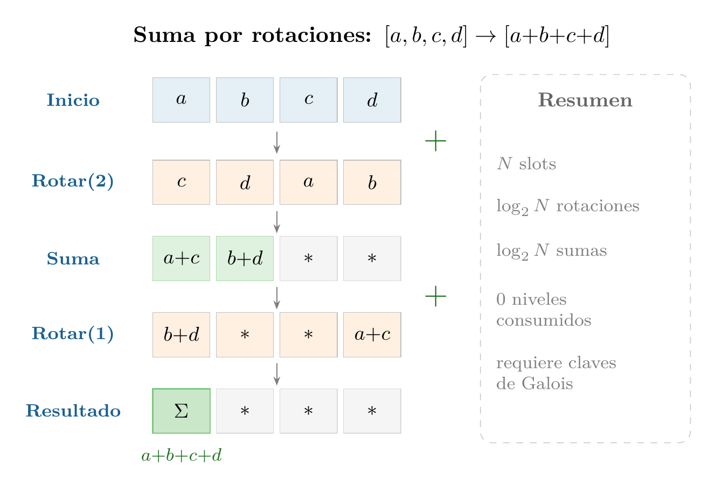
¿Cómo funciona una rotación sobre el polinomio? Aquí la matemática del anillo \(R_q\) revela un truco elegante. Recordemos que los slots son las evaluaciones del polinomio \(m(x)\) en las raíces \(\omega_0, \omega_1, \ldots, \omega_{N/2-1}\) del polinomio \(x^N + 1\). Permutar los slots — mover el valor del slot \(i\) al slot \(j\) — equivale a permutar las raíces en las que se evalúa el polinomio.
Resulta que ciertas sustituciones de la variable del polinomio — llamadas automorfismos del anillo — hacen exactamente eso. La sustitución \(x \to x^k\) (para ciertos valores impares de \(k\)) reordena las raíces de \(x^N + 1\) y, por tanto, permuta los slots. Trabajemos el ejemplo del diagrama (Figura 5.13): \(N = 8\), 4 slots, sustitución \(x \to x^3\).
Paso 1: qué es un slot. En CKKS, el slot \(j\) es el valor que toma el polinomio \(p(x)\) al evaluarlo en la raíz \(\omega^{5^j \bmod 16}\), donde \(\omega = e^{i\pi/8}\) es una raíz primitiva de \(x^8 + 1\). Para \(N=8\) hay 4 slots, con raíces \(\omega^1, \omega^5, \omega^9, \omega^{13}\).
Paso 2: qué hace la sustitución al polinomio. Aplicar \(x \to x^3\) transforma \(p(x)\) en el nuevo polinomio \(q(x) = p(x^3)\). El valor del slot \(j\) en \(q\) es: \[q(\omega^{5^j}) = p\!\left((\omega^{5^j})^3\right) = p\!\left(\omega^{3 \cdot 5^j \bmod 16}\right)\] Es decir, el slot \(j\) del nuevo polinomio toma el valor que \(p\) tenía en la raíz \(\omega^{3 \cdot 5^j \bmod 16}\).
Paso 3: calcular adónde va cada slot. Computamos \(3 \cdot 5^j \bmod 16\) para \(j = 0, 1, 2, 3\):
| Slot \(j\) | Raíz original | \(3 \cdot 5^j \bmod 16\) | Nueva raíz | Valor en el slot |
|---|---|---|---|---|
| 0 | \(\omega^1\) | \(3 \cdot 1 = 3\) | \(\omega^3 = \overline{\omega^{13}}\) | \(d\) (slot 3 original) |
| 1 | \(\omega^5\) | \(3 \cdot 5 = 15\) | \(\omega^{15} = \overline{\omega^{1}}\) | \(a\) (slot 0 original) |
| 2 | \(\omega^9\) | \(3 \cdot 9 = 27 \equiv 11\) | \(\omega^{11} = \overline{\omega^{5}}\) | \(b\) (slot 1 original) |
| 3 | \(\omega^{13}\) | \(3 \cdot 13 = 39 \equiv 7\) | \(\omega^{7} = \overline{\omega^{9}}\) | \(c\) (slot 2 original) |
Paso 4: por qué el conjugado da el mismo valor. En cada caso, la nueva raíz es el conjugado complejo de la raíz de otro slot. Para datos reales, \(p(\bar{z}) = \overline{p(z)} = p(z)\) — el valor en el conjugado coincide con el valor original. Por tanto, el slot \(j\) del resultado contiene el valor del slot \(j-1\) del original.
El efecto neto es una rotación cíclica derecha: \([a, b, c, d] \to [d, a, b, c]\). Eligiendo distintos valores de \(k\) impar se obtienen permutaciones distintas — cada \(k\) es una rotación diferente.
¿Por qué hacen falta claves de Galois? Aquí está el problema práctico. Aplicar \(x \to x^k\) al cifrotexto \((a(x), b(x))\) produce \((a(x^k), b(x^k))\). Este nuevo par sigue cifrando el mensaje rotado, pero bajo una clave diferente: \(s(x^k)\) en lugar de \(s(x)\). Es como si al rotar los guantes de la caja de seguridad se hubiera cambiado la cerradura — el resultado es correcto, pero ya no podemos abrirlo con nuestra llave original.
Para convertir el cifrotexto de vuelta a la clave \(s(x)\) se necesita un paso adicional llamado key-switching — conceptualmente similar a la relinearización que vimos en la multiplicación, pero convirtiendo \(s(x^k)\) a \(s(x)\) en lugar de \(s^2\) a \(s\). Este paso requiere una clave precalculada que «traduce» entre las dos claves. Esa clave es la clave de Galois para la rotación por \(k\) posiciones, y necesitamos una distinta para cada valor de \(k\) que queramos usar.
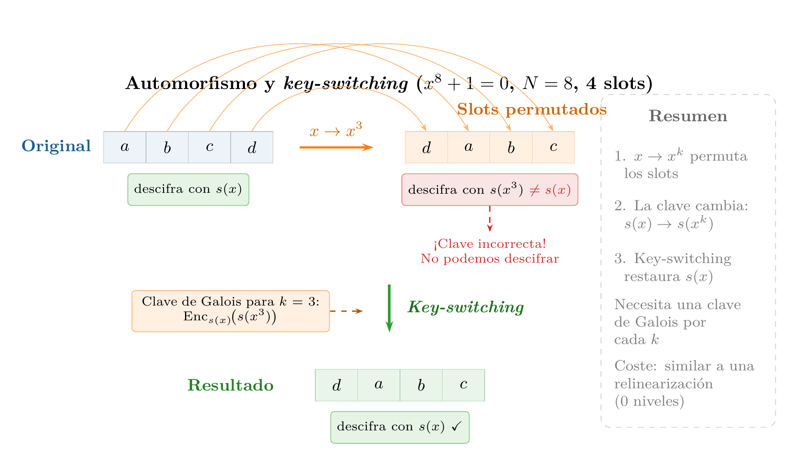
Esto explica por qué las claves de Galois son tan voluminosas: con \(N = 8192\), las \(\log_2(N/2) = 12\) rotaciones necesarias para un sum() requieren 12 claves de Galois, cada una del tamaño de un cifrotexto (cientos de kilobytes). Si el circuito necesita rotaciones por cantidades arbitrarias, el conjunto completo puede alcanzar cientos de megabytes. Conviene ver todas las claves del esquema en conjunto:
| Clave | Se genera | Habilita | ¿Qué pasa sin ella? |
|---|---|---|---|
| Secreta (\(s\)) | Automáticamente al crear el contexto | Descifrar | No se pueden recuperar los resultados |
| Pública | Automáticamente al crear el contexto | Cifrar | No se pueden cifrar datos (solo el poseedor de \(s\) podría) |
| Relinearización | Automáticamente en TenSEAL | Multiplicación entre cifrotextos | El cifrotexto crece tras cada multiplicación hasta ser inmanejable |
| Galois | Explícitamente: generate_galois_keys() |
Rotaciones | sum() y cualquier operación que combine slots falla con error |
En nuestro código, ts.context(...) genera automáticamente la clave secreta, la pública y la de relinearización. Las claves de Galois hay que pedirlas explícitamente con generate_galois_keys(). ¿Por qué no se generan también automáticamente? Porque son caras: con \(N = 8192\), las claves de Galois ocupan cientos de megabytes y tardan varios segundos en generarse. Si el circuito solo necesita sumas y multiplicaciones elemento a elemento — sin rotaciones —, ese coste es innecesario. Por eso la librería deja la decisión al programador.
Si Daniel olvidara esa línea e intentara ejecutar salarios_cifrados.sum() — que internamente necesita rotar y acumular los slots del vector —, obtendría un error en tiempo de ejecución. Las sumas y multiplicaciones elemento a elemento funcionarían sin problema, pero cualquier operación que combine slots distintos del vector fallaría.
Coste de las rotaciones. Las rotaciones no consumen niveles multiplicativos — son operaciones lineales, como las sumas. Pero no son gratis: cada rotación añade una pequeña cantidad de ruido (por el key-switching) y tiene un coste computacional similar al de una multiplicación, porque el paso de key-switching involucra multiplicaciones de polinomios. En un circuito que combine packing con rotaciones, el diseñador debe contabilizar tanto la profundidad multiplicativa como el número de rotaciones para dimensionar correctamente los parámetros.
¿Qué operaciones se benefician? Las tres primitivas del modelo SIMD — suma slot a slot, multiplicación slot a slot y rotación — cubren un catálogo bien definido de operaciones eficientes. Las operaciones elementales (sumar dos vectores cifrados, multiplicarlos componente a componente, escalar por una constante) son directas: una sola operación polinómica sobre todos los slots en paralelo, sin importar cuántos haya. Las reducciones — sumar todos los elementos, calcular una media, obtener una norma — usan el árbol de rotaciones con coste \(O(\log N_{\text{slot}})\) en lugar del \(O(N_{\text{slot}})\) que costaría operar slot a slot. Los productos escalares combinan ambas primitivas: una multiplicación SIMD (slot a slot) seguida de una reducción por rotaciones. Las multiplicaciones matriz-vector se descomponen en productos escalares de cada fila con el vector. Y las convoluciones de redes neuronales se implementan como secuencias de rotaciones y acumulaciones. El patrón general es: cualquier cálculo que se exprese como combinaciones de sumas, multiplicaciones y desplazamientos sobre vectores se traduce eficientemente a FHE con packing y rotaciones. Lo que queda fuera son las operaciones que dependen del valor de los datos — comparaciones, condicionales, ordenaciones — porque el esquema no permite inspeccionar un cifrotexto para decidir qué rama tomar.
En resumen: el packing reduce el coste por dato cuando las operaciones son paralelas e independientes, y las rotaciones permiten combinar datos de distintos slots cuando el circuito lo requiere. Juntos, transforman la economía del FHE — el coste amortizado baja varios órdenes de magnitud y operaciones complejas como medias, productos escalares y regresiones se vuelven viables. El precio es la complejidad adicional de las claves de Galois y el diseño cuidadoso de los patrones de rotación. Este mecanismo de codificación — polinomio → evaluación en raíces → slots — también explica las transformadas CoeffsToSlots y SlotsToCoeffs que vimos en el bootstrapping: son exactamente los pasos de pasar de coeficientes del polinomio a la representación por slots y viceversa. Todo lo anterior — retículos, RLWE, cifrado, ruido, bootstrapping, packing y rotaciones — es la maquinaria de CKKS, el esquema que usamos en nuestro código. Pero no es la única forma de construir un esquema FHE.
5.8 Otros esquemas de encriptado
Todo lo que hemos visto describe CKKS, pero no es el único esquema FHE. Existen cuatro esquemas principales, y elegir entre ellos es una decisión de ingeniería que depende del tipo de datos, las operaciones necesarias y los compromisos aceptables.
La familia RLWE: BFV, BGV y CKKS. Los tres comparten los mismos cimientos: el anillo RLWE, la cadena de módulos, el packing SIMD y las rotaciones por automorfismos. La diferencia está en cómo codifican el mensaje antes de cifrarlo.
BFV y BGV trabajan con enteros exactos: el descifrado recupera el valor sin ningún error, mediante redondeo exacto (BFV) o reducción del módulo del mensaje (BGV). Eso los hace ideales para conteos, consultas sobre bases de datos cifradas o votación electrónica — escenarios donde un error de \(\pm 1\) sería inaceptable. La contrapartida es que no representan reales directamente: cualquier cálculo con decimales exige gestionar manualmente aritmética de punto fijo.
CKKS acepta un pequeño error de aproximación (\(\sim 10^{-7}\)) a cambio de poder codificar números reales de forma nativa. Eso lo convirtió en el esquema de referencia para machine learning y estadística sobre datos cifrados, donde ese error es irrelevante frente al ruido de los propios datos. No es adecuado cuando los resultados deben ser exactos.
TFHE: puertas lógicas en el toro. TFHE abandona por completo el modelo SIMD. Su base matemática es distinta: en lugar de explotar las raíces del polinomio \(x^N + 1\) para crear slots independientes (como hace la familia RLWE), cifra cada bit como una posición en el toro \(\mathbb{T} = \mathbb{R}/\mathbb{Z}\) — una estructura circular donde solo importa la parte decimal del número — y evalúa el cómputo como un circuito de puertas lógicas, una a una (Figura 5.14). Cada puerta ejecuta un bootstrapping automático, lo que elimina el concepto de «presupuesto de niveles»: el circuito puede ser arbitrariamente profundo sin planificación previa.
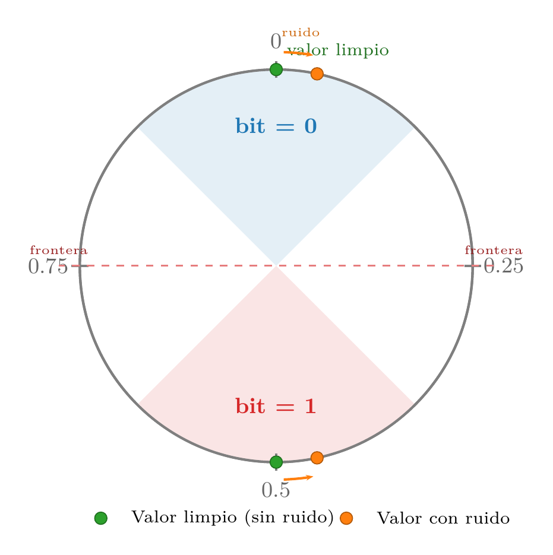
La fortaleza de TFHE es exactamente la debilidad de CKKS: comparaciones, condicionales y flujo de control. Un if (x > y) que en CKKS requiere aproximar la función signo con un polinomio de grado alto — consumiendo muchos niveles —, en TFHE se evalúa directamente bit a bit. La contrapartida: sin SIMD, sumar dos enteros de 32 bits exige encadenar cientos de puertas lógicas donde CKKS ejecutaría una sola operación. Las librerías modernas como Concrete (Zama) mitigan esto empaquetando enteros de \(n\) bits por cifrotexto y usando el programmable bootstrapping — que aplica cualquier función durante el proceso de limpieza del ruido, sin coste adicional — para evaluar funciones no lineales como ReLU o comparaciones en un solo paso.
Comparación. La Tabla 5.2 resume las diferencias entre los cuatro esquemas:
| Esquema | Base | Dato nativo | Fortaleza | Limitación principal |
|---|---|---|---|---|
| BFV | RLWE | Enteros exactos | Aritmética entera exacta, SIMD | Sin reales; bootstrap lento |
| BGV | RLWE | Enteros exactos | Como BFV, más eficiente a escala | Sin reales; bootstrap lento |
| CKKS | RLWE | Reales aprox. | Punto flotante, SIMD | Error acumulado; inexacto |
| TFHE | LWE + RLWE | Bits / enteros pequeños | Comparaciones, condicionales; LUTs | Sin SIMD; aritmética lenta |
En nuestro ejemplo usamos CKKS porque necesitamos operar con números reales (salarios) y podemos tolerar un error de aproximación mínimo — exactamente el escenario para el que fue diseñado. Si necesitáramos comparar salarios cifrados para encontrar el máximo, TFHE sería la elección natural. Y si el requisito fuera contar votos cifrados sin ningún margen de error, BFV o BGV serían los candidatos.
coeff_mod_bit_sizes=[60, 40, 40, 40, 60], ¿cuántas multiplicaciones encadenadas soporta el esquema?
Lecturas Recomendadas
El mejor punto de partida para aprender en profundidad sobre cifrado homomórfico es el artículo original Gentry (2010), donde Gentry explica su propio avance en lenguaje accesible, sin formalismo pesado; es ideal para entender qué resuelve el FHE y por qué funciona el bootstrapping. Como siguiente paso, Vaikuntanathan (2011) es una charla invitada en FOCS que profundiza en la mecánica del FHE sin requerir criptografía avanzada, explicando la evolución desde cifrado parcialmente homomórfico hasta FHE completo con claridad excepcional. Para una visión completa y actualizada del campo, Marcolla et al. (2022) ofrece una revisión exhaustiva que cubre todos los esquemas modernos (BGV, BFV, CKKS, TFHE), aceleración por hardware y despliegues reales.
Aunque el FHE garantiza la confidencialidad de los datos, no garantiza su integridad — el segundo pilar de la seguridad (confidencialidad, integridad y disponibilidad) —: no garantiza que el servidor calculó correctamente ni que el resultado no fue manipulado. La combinación natural para añadir integridad son las pruebas de conocimiento cero, que se tratan en el capítulo sobre pruebas de conocimiento cero.
Sin embargo, el FHE protege los datos pero no el programa: el servidor conoce el programa que ejecuta. Para entender dónde encaja esta tecnología en el paisaje más amplio de la computación privada, Barak (2016) ofrece una introducción accesible escrita por uno de los investigadores más prominentes del campo. El artículo sitúa el FHE junto a otras dos primitivas complementarias. La primera es el cómputo multiparte seguro (MPC), donde varias partes computan conjuntamente sin que ninguna vea los datos de las demás; a diferencia del FHE, el MPC está desplegado en producción hoy — con un overhead del orden de 10–100× sobre texto en claro — y tiene aplicaciones reales en detección de fraude entre bancos o análisis de datos genómicos entre instituciones. La segunda es la ofuscación por indistinguibilidad (iO), que permitiría cifrar también la lógica del programa — el escenario donde ni los datos ni el código son visibles para el servidor —, pero es hoy completamente impráctica (varios órdenes de magnitud más lenta que el propio FHE), razón por la que no tiene capítulo propio en este libro.
Referencias
Soluciones
2.1. BFV opera sobre enteros exactos (el descifrado recupera el valor exacto mediante redondeo) y es adecuado para consultas sobre bases de datos o conteos. CKKS opera sobre números reales aproximados (acepta un pequeño error de \(\sim 10^{-6}\)) y es el esquema de referencia para machine learning y estadística. Verifica que el LLM mencione que ambos comparten la base RLWE y que la diferencia clave está en la codificación del mensaje.
2.2. poly_modulus_degree=16384 duplica la seguridad y permite más niveles multiplicativos, pero cada operación tarda más (los polinomios son el doble de grandes). Con 4096, las operaciones son más rápidas pero se obtienen menos niveles multiplicativos y menor seguridad. El tiempo de ejecución escala aproximadamente con \(O(n \log n)\) por operación NTT.
2.3. La fórmula \(E[X^2] - (E[X])^2\) necesita una multiplicación element-wise (\(x_i^2\)) y una multiplicación del resultado de la media por sí mismo — dos multiplicaciones cifrotexto×cifrotexto. La alternativa \(\frac{1}{n}\sum(x_i - \bar{x})^2\) requiere primero calcular \(\bar{x}\) (sumas y rotaciones), luego restar a cada \(x_i\) (una suma por constante), y finalmente elevar al cuadrado cada diferencia — parece similar en multiplicaciones, pero exige primero materializar la media en cada slot (rotaciones extra). En CKKS, la primera fórmula es generalmente más eficiente: menos rotaciones y el mismo número de niveles multiplicativos.
2.4. Las dos ramas deben llegar al punto de la resta habiendo recorrido secuencias simétricas de operaciones — el mismo tipo y orden de multiplicaciones — de modo que sus cifrotextos terminen en el mismo nivel y con escalas e historiales de ruido equivalentes. En la versión ingenua, una rama hace ct*ct seguido de *(1/n) mientras la otra hace *(1/n) seguido de media*media: aunque ambas consumen dos niveles, la segunda multiplica entre sí dos cifrotextos ya degradados por la *(1/n) previa, así que su estado interno no encaja con el de la primera. CKKS no detecta el desajuste y la resta produce basura. La solución mueve las constantes al texto claro: ambas ramas pasan por exactamente una ct*ct entre cifrotextos frescos.
2.5. Porque features_cifrados * pesos multiplica un cifrotexto por constantes en claro, lo que no consume niveles — es equivalente a escalar el polinomio interno. Si los pesos también estuvieran cifrados, sería una multiplicación cifrotexto × cifrotexto, que sí consume un nivel y requiere relinearización.
2.6. Con 10 000 features y \(N_{\text{slot}} = 4096\), necesitas \(\lceil 10\,000 / 4096 \rceil = 3\) cifrotextos para empaquetar todas las features. La predicción requiere 3 multiplicaciones por constantes (una por cifrotexto) y 3 sumas por rotación (una por cifrotexto), y finalmente sumar los 3 resultados escalares — una operación trivial sobre textos descifrados o una suma homomórfica adicional.
2.7. Se necesitan 2 niveles: uno para \(x^2 = x \cdot x\) y otro para \(x^3 = x^2 \cdot x\) (las multiplicaciones por constantes \(a, b, c, d\) y las sumas no consumen niveles). La configuración sería coeff_mod_bit_sizes=[60, 40, 40, 60] con poly_modulus_degree=8192.
2.8. El error explícito es una decisión de seguridad: en un sistema médico, un resultado «aproximado» silencioso podría causar un diagnóstico erróneo; en finanzas, una transacción con datos corruptos podría pasar desapercibida. El principio fail-fast garantiza que los errores se detecten en desarrollo, no en producción. Es preferible un sistema que se detiene a uno que produce resultados plausibles pero incorrectos.
2.9. Con profundidad 20: dimensionar 20 niveles requiere un poly_modulus_degree enorme (≥32768) para mantener la seguridad, lo que hace cada operación muy lenta. Con 5 niveles + bootstrapping cada 5 multiplicaciones, se necesitan 4 bootstrappings (~4 s extra) pero cada multiplicación individual es más rápida (polinomios más pequeños). Para circuitos profundos, el bootstrapping periódico suele ser más eficiente que dimensionar estáticamente, especialmente cuando la profundidad no se conoce de antemano.
2.10. El bootstrapping evalúa homomórficamente el circuito de descifrado (\(b - a \cdot s\)), lo que requiere cifrar la clave secreta \(s\) bajo sí misma. La seguridad circular es la hipótesis de que publicar \(\text{Enc}_s(s)\) no debilita el esquema. No está demostrada en general — es una suposición adicional que todos los esquemas FHE asumen. Verifica que el LLM distinga entre esta hipótesis y la seguridad estándar IND-CPA.
2.11. El servidor debe procesar todos los registros porque el vector de consulta está cifrado — no puede distinguir los ceros del uno. Si procesara solo un subconjunto, revelaría por eliminación que la posición consultada está en ese subconjunto, rompiendo la privacidad de la consulta.
2.12. Con \(N_{\text{slot}} = N/2 = 4096\) slots por cifrotexto y 10 000 registros, el cliente necesita \(\lceil 10\,000 / 4096 \rceil = 3\) cifrotextos (uno con el 1 en la posición correcta, los otros dos con solo ceros). El servidor debe procesar los 3 cifrotextos — no puede descartar ninguno sin filtrar información sobre la consulta.
2.13. Cada bloque adicional exige su propia multiplicación y suma sobre \(N_{\text{slot}}\) registros, así que el trabajo total del servidor es la suma del trabajo de todos los bloques — el mismo \(O(n)\) de siempre, solo que repartido en más operaciones sobre cifrotextos más pequeños. Los sistemas de recuperación privada que particionan por categorías públicas (hospital, año, etc.) reducen el universo de registros candidatos a cambio de revelar esa categoría al servidor, asumiendo que no es información sensible.
3.1. Alternativas actuales insatisfactorias: (1) En sanidad se anonimiza o se recurre a acuerdos de confidencialidad, pero la anonimización es frágil (se pueden re-identificar pacientes cruzando variables) y los acuerdos no impiden que el proveedor vea datos en claro. (2) En finanzas se usan entornos controlados (data clean rooms) y acuerdos legales, pero el receptor sigue accediendo a los datos reales. (3) En ML multiorganización se centraliza la recopilación, exponiendo datos individuales. FHE eliminaría estas exposiciones al operar siempre sobre datos cifrados.
3.2. Empresas y librerías: Microsoft SEAL (C++, BFV/CKKS), IBM HELib (BGV/CKKS), Zama (Concrete, TFHE), Google (FHE transpiler para C++), Duality Technologies. El estado de madurez en 2024 es producción limitada: hay casos de uso reales (ML sobre datos cifrados, computación financiera) pero el overhead es aún elevado (\(10^4\)–\(10^5\times\)) para la mayoría de aplicaciones.
4.1. El coste es aceptable cuando el valor de la privacidad supera el coste computacional: datos genómicos, modelos financieros propietarios, votación electrónica, computación sobre datos médicos regulados. No es aceptable para aplicaciones de baja latencia (videojuegos, trading de alta frecuencia) o donde los datos no son sensibles.
4.2. Los avances principales entre 2015 y 2024 fueron: bootstrapping más rápido (TFHE genera evaluaciones de milisegundos), CKKS para aritmética aproximada (2017), compiladores FHE que transforman código normal a código homomórfico (Google, Zama), y aceleración hardware (Intel HEXL, proyectos DARPA DPRIVE). La brecha de rendimiento se redujo de ~\(10^6\times\) a ~\(10^4\times\) para muchas operaciones.
4.3. Los esquemas FHE basados en RLWE solo ofrecen dos operaciones nativas: suma y multiplicación de polinomios. Una comparación como x > y no es una operación aritmética — requiere evaluar una función no lineal (signo). Para implementarla, se aproxima la función signo mediante un polinomio de grado alto (típicamente grado 10-30), y cada multiplicación de ese polinomio consume un nivel del presupuesto. Un simple if (x > y) puede costar entre 4 y 10 niveles multiplicativos.
5.1. SVP pide encontrar el vector no nulo más corto del retículo; CVP pide encontrar el punto del retículo más cercano a un punto dado del espacio. CVP es al menos tan difícil como SVP porque, si se pudiera resolver CVP eficientemente, se podría usar para resolver SVP: basta con consultar CVP con el punto origen y descartar el vector nulo. La intuición de por qué SVP puede ser más fácil es que su punto de referencia (el origen) pertenece al propio retículo, lo que permite explotar simetrías internas de la estructura (invariancia por traslación, por ejemplo). En CVP, el punto objetivo es arbitrario y «rompe» esas simetrías — es un problema parametrizado por una entrada externa sin relación con la estructura periódica del retículo.
5.2. RSA se basa en la factorización de enteros, que el algoritmo de Shor resuelve en tiempo polinomial en un ordenador cuántico. Los problemas de retículos (SVP, CVP) no tienen un análogo cuántico eficiente conocido: los mejores algoritmos cuánticos siguen siendo exponenciales en la dimensión del retículo. Por eso los retículos son la base de la criptografía post-cuántica y, por extensión, del FHE.
5.3. En el anillo \(R_q = \mathbb{Z}_q[x]/(x^n+1)\), multiplicar por un polinomio \(a(x)\) es equivalente a multiplicar por una matriz anticirculante determinada por los coeficientes de \(a(x)\). Esto permite reemplazar la matriz aleatoria \(A\) de LWE (\(n^2\) enteros, multiplicación \(O(n^2)\)) por un solo polinomio (\(n\) enteros, multiplicación \(O(n \log n)\) vía NTT). Con \(n = 8192\), las claves se reducen ~\(8\,000\times\) y las operaciones se aceleran ~\(1\,000\times\).
5.4. La ecuación RLWE es \(b = a \cdot s + e\), donde \(e\) es un error pequeño. Sin el error, recuperar \(s\) sería álgebra lineal trivial (dividir polinomios). Con él, \(b\) es un punto cercano al retículo generado por el anillo \(R_q\), pero no exactamente en él — recuperar \(s\) equivale a encontrar el punto más cercano, que es CVP. Formalmente, Lyubashevsky, Peikert y Regev demostraron que resolver RLWE en el caso medio permite resolver SVP aproximado en retículos ideales en el caso peor. Verifica que el LLM mencione que la reducción aplica a retículos ideales (los que tienen la estructura de anillo \(R_q\), no retículos generales) y que es el ruido \(e\) lo que convierte un problema trivial en uno intratable.
5.5. Sin el polinomio aleatorio \(a\), dos cifrotextos \(c_1 = s + e_1 + m_1\) y \(c_2 = s + e_2 + m_2\) permitirían al atacante calcular \(c_1 - c_2 \approx m_1 - m_2\), revelando la diferencia entre los mensajes. El polinomio \(a\), distinto en cada cifrado, actúa como máscara que hace cada cifrotexto indistinguible de ruido aleatorio.
5.6. En la suma homomórfica, los errores se suman: \(e_{\text{sum}} = e_1 + e_2\). Si los errores iniciales son del orden de \(\epsilon\), tras \(k\) sumas el error es \(k\epsilon\). En la multiplicación, los errores se multiplican con los mensajes: \(e_{\text{mult}} \approx e_1 \cdot m_2 + e_2 \cdot m_1\), creciendo proporcionalmente al tamaño de los mensajes. Esto limita drásticamente el número de multiplicaciones encadenadas antes de que el ruido desborde el módulo.
5.7. La multiplicación homomórfica produce un triplete \((d_0, d_1, d_2)\) que depende de \(s^2\), en vez del par estándar \((a, b)\) que depende solo de \(s\). La relinearización usa una clave pública que cifra \(s^2\) para convertir el triplete en un par estándar. Sin ella, cada multiplicación aumentaría el grado del cifrotexto en \(s\), haciéndolo inmanejable tras pocas operaciones.
5.8. La lógica if (m < 0) then m = -m calcula el valor absoluto: \(|m| = m \cdot \text{sign}(m)\). Como CKKS no soporta ramas condicionales, la función signo debe aproximarse mediante un polinomio (por ejemplo, la aproximación de Chebyshev de grado 15–27). La implementación evalúa ese polinomio sobre el cifrotexto — \(\text{Enc}(\text{sign}(m)) \approx p(\text{Enc}(m))\) — y luego multiplica el resultado por \(\text{Enc}(m)\): enc_abs = enc_m * poly_sign(enc_m). Evaluar el polinomio consume \(\lceil \log_2(\text{grado}) \rceil \approx 4\)–\(5\) niveles mediante el algoritmo de Paterson–Stockmeyer, más un nivel adicional para la multiplicación final: entre 5 y 10 niveles multiplicativos en total, frente a una instrucción en código convencional.
5.9. En CKKS, cada multiplicación duplica la escala del mensaje de \(\Delta\) a \(\Delta^2\) y amplifica el error por un factor \(\Delta\). El rescaling divide todo el cifrotexto por \(\Delta\), restaurando la escala estándar y eliminando los 40 bits extra de error. Sin rescaling, la escala crecería exponencialmente y el módulo \(q\) se agotaría tras una sola multiplicación.
5.10. El circuito \(a \cdot b + c \cdot d\) tiene dos multiplicaciones independientes (paralelas, no encadenadas) seguidas de una suma. La profundidad multiplicativa es 1. Basta con un solo nivel: coeff_mod_bit_sizes=[60, 40, 60] sería suficiente.
5.11. El bootstrapping evalúa el circuito de descifrado (\(b - a \cdot s\)) homomórficamente, lo que requiere operar con \(s\) dentro del dominio cifrado. Para ello se necesita un cifrado de \(s\) bajo la propia clave \(s\). Esto requiere la hipótesis de seguridad circular: que cifrar la clave bajo sí misma no debilita el esquema. Todos los esquemas FHE actuales asumen esta propiedad, aunque no está demostrada en general.
5.12. Dimensionar los parámetros para evitar el bootstrapping requiere un módulo \(q\) proporcional al número de multiplicaciones, lo que exige un poly_modulus_degree cada vez mayor para mantener la seguridad. Para circuitos muy profundos, los polinomios serían tan grandes que cada operación sería más lenta que hacer bootstrapping periódico. El bootstrapping es inevitable cuando la profundidad del circuito no se conoce de antemano o es demasiado grande para dimensionar estáticamente.
5.13. El polinomio \(x^N + 1\) tiene \(N\) raíces complejas, pero como los coeficientes del polinomio mensaje son reales, las evaluaciones en raíces conjugadas son también conjugadas: \(m(\bar{\omega}) = \overline{m(\omega)}\). Las raíces se agrupan en \(N/2\) pares conjugados, y cada par aporta un solo valor independiente. Por eso hay \(N/2\) slots, no \(N\).
5.14. Los 4091 slots restantes contienen ceros. El coste de las operaciones no se ve afectado: una suma o multiplicación homomórfica procesa todos los \(N/2 = 4096\) slots en paralelo, estén o no ocupados. El coste es por cifrotexto, no por dato — los slots vacíos simplemente suman o multiplican ceros sin coste adicional.
5.15. Los slots no coinciden con los coeficientes del polinomio: están codificados mediante una variante de la DFT (la canonical embedding). El descifrado homomórfico del bootstrapping produce el polinomio en su representación de coeficientes, pero la reducción modular debe aplicarse a cada slot por separado. CoeffsToSlots convierte de coeficientes a slots mediante una multiplicación matricial homomórfica, lo que consume varios niveles multiplicativos adicionales — niveles que se restan del presupuesto recién restaurado.
5.16. El árbol de sumas necesita \(\log_2(4096) = 12\) rotaciones y 12 sumas homomórficas. En cada paso se rota por una potencia de 2 (\(1, 2, 4, \ldots, 2048\)) y se suma el resultado con el vector original, de modo que tras 12 pasos cada slot contiene la suma de todos los elementos.
5.17. La sustitución \(x \to x^k\) que implementa la rotación transforma el cifrotexto \((a(x), b(x))\) en \((a(x^k), b(x^k))\), que queda cifrado bajo la clave \(s(x^k)\) en lugar de \(s(x)\). Para poder descifrar con la clave original, se necesita un key-switching que requiere material precalculado — la clave de Galois — específico para cada valor de \(k\). Distintas cantidades de rotación corresponden a distintos exponentes \(k\), y cada uno necesita su propia clave.
5.18. En un registro SIMD de CPU, un shift circular reordena las posiciones del registro sin coste criptográfico — es una operación directa sobre bits. En FHE, la rotación logra el mismo efecto lógico (desplazar posiciones del vector), pero requiere un automorfismo sobre el polinomio seguido de key-switching, lo que añade ruido y necesita una clave de Galois precalculada. La similitud es funcional: ambos mueven datos dentro de un «registro ancho». La diferencia es el coste: nanosegundos en CPU, milisegundos en FHE, más la necesidad de claves adicionales.
5.19. Parcial: soporta UN SOLO tipo de operación sin límite (RSA→multiplicaciones, Paillier→sumas). Somewhat (SHE): soporta sumas Y multiplicaciones pero con un número limitado de operaciones antes de que el ruido imposibilite el descifrado. Fully (FHE): soporta sumas y multiplicaciones sin límite, gracias al bootstrapping que resetea el ruido periódicamente. Verifica que el LLM no confunda SHE con FHE.
5.20. Los niveles intermedios (40, 40, 40) consumen un nivel de profundidad multiplicativa cada uno. Con tres niveles intermedios de 40 bits, el esquema soporta 3 multiplicaciones encadenadas. Los niveles extremos (60) se reservan para la escala (encoding) y el descifrado.
5.21. Codificación: BFV escala el mensaje entero por \(\lfloor q/t \rfloor\) y recupera el resultado exacto por redondeo; BGV hace lo mismo con gestión inversa de módulos; CKKS escala por \(\Delta\) y acepta un error de aproximación para representar reales. Fortalezas: BFV/BGV garantizan aritmética entera exacta; CKKS permite punto flotante y es natural para ML. Limitaciones: BFV/BGV no representan reales; CKKS acumula error. TFHE se distingue en ambos ejes: usa LWE (no RLWE) — vectores de enteros en lugar de polinomios — y codifica un solo bit por cifrotexto en un toro. Su modelo de cómputo es por puertas lógicas con bootstrapping automático tras cada puerta (~10 ms), lo que lo hace ideal para comparaciones y condicionales pero ineficiente para aritmética masiva (sin paralelismo SIMD).